Elektronische Gesundheitskarte und Telematikinfrastruktur
Implementierungsleitfaden Primärsysteme -
Elektronische Patientenakte (ePA)
| Version | 2.51.0 |
| Revision | 585046 |
| Stand | 15.12.2022 |
| Status | in Bearbeitung |
| Klassifizierung | öffentlich |
| Referenzierung | gemILF_PS_ePA |
Änderungen zur Vorversion
Anpassungen des vorliegenden Dokumentes im Vergleich zur Vorversion können Sie der nachfolgenden Tabelle entnehmen.
Dokumentenhistorie
| Version | Stand | Kap./ Seite | Grund der Änderung, besondere Hinweise | Bearbeitung |
|---|---|---|---|---|
| 1.0.0 | 18.12.18 | initiale Erstellung des Dokuments | gematik | |
| 1.1.0 | 15.05.19 | Einarbeitung P 18.1 | gematik | |
| 1.2.0 | 28.06.19 | Einarbeitung P 19.1 | gematik | |
| 1.3.0 | 02.10.19 | Einarbeitung P 20.1/2 | gematik | |
| 1.4.0 | 02.03.20 | Einarbeitung P 21.1 | gematik | |
| 1.5.0 | 30.06.20 | Anpassungen gemäß Änderungsliste P22.1 und Scope-Themen aus Systemdesign R4.0.0 | gematik | |
| 1.6.0 | 12.10.20 | Einarbeitung P22.2 | gematik | |
| 1.7.0 | 19.02.21 | Einarbeitung Änderungsliste P22.5 | gematik | |
| 1.8.0 | 02.06.21 | Einarbeitung ePA_Maintenance_21.1 | gematik | |
| 1.8.1 | 09.07.21 | Einarbeitung ePA_Maintenance_21.2 | gematik | |
| 1.8.2 | 30.09.21 | Einarbeitung ePA_Maintenance_21.3 | gematik | |
| 2.0.0 | 05.11.21 | Konkretisierung der Nutzungsszenarien: Erhaltene Berechtigungen ermitteln (Kap 5.1.4 neu), Aktenanbieter ermitteln (Kap. 5.1.1) und Ad-hoc-Berechtigung erteilen durch einen Vertreter (Kap. 5.1.3.4 neu) | gematik | |
| 2.1.0 | 16.02.22 | Einarbeitung ePA_Maintenance_21.5 und weiterer Verbesserungen und Erweiterungen innerhalb der Fachanwendung ePA, Übernahme der Beispiele in GitHub | gematik | |
| 2.1.1 | 12.04.22 | Einarbeitung ePA_Maintenance_22.1 | gematik | |
| 2.50.0 | 09.05.22 | ePA-Stufe 2.5: gemF_ePA_DiGA_Anbindung | gematik | |
| 2.50.1 | 12.05.22 | 5.4.3 | redaktionelle Anpassung: Tabelle 37 | gematik |
| 2.51.0 | 15.12.22 | Einarbeitung ePA_Maintenance_22.2 und 22.3, redaktionelle Anpassung Referenz: [gemSpec_DM_ePA#A_22470-*] und diskriminierungsfreie Sprache (Blacklist in Denylist) | gematik |
Die vorliegende Spezifikation definiert Anforderungen zu Erstellung, Test und Betrieb derjenigen Anteile eines Primärsystems, die zur Nutzung der elektronischen Patientenakte erforderlich sind.
Technische Standards werden in der ePA verwendet, um Interoperabilität zu steigern und die technischen Voraussetzungen zur Nutzung der Anwendung zu legen. Auf Seiten der Primärsystemhersteller eröffnet die Verwendung von Standards die Chance, wiederverwendbare Schnittstellen zu entwickeln bzw. zu nutzen und einzelne Module austauschbar zu gestalten.
Zum Zweck der Implementierungshilfe werden grundlegende Konzepte und Anwendungsfälle der ePA aus der Sicht der PS-Hersteller erläutert. Dabei werden nicht nur Anwendungsfälle der ePA erläutert, sondern auch praktische Umsetzungshinweise sowie Beispiele gegeben.
Das Dokument ist maßgeblich für Hersteller von Primärsystemen, welche die Fachmodul-ePA-Schnittstelle des Konnektors nutzen.
Falls ein Primärsystem bisher das technische Framework von IHE noch nicht verwendet, wird es durch diesen Implementierungsleitfaden in die Lage versetzt, die ePA-Schnittstellen IHE-konform zu verwenden.
Falls ein Primärsystem das technische Framework von IHE bereits verwendet, schildert der Implementierungsleitfaden ihm die relevanten Einschränkungen des IHE-Frameworks, die für die ePA der Telematikinfrastruktur von Relevanz sind. Die IHE-Konformität dieser Schnittstellen ermöglicht ihm die Anbindung weiterer Gegenstandsbereiche.
Dieses Dokument enthält normative Festlegungen zur Telematikinfrastruktur des deutschen Gesundheitswesens. Der Gültigkeitszeitraum der vorliegenden Version und deren Anwendung in Bestätigungs- Zulassungs- oder Abnahmeverfahren wird durch die gematik GmbH in gesonderten Dokumenten (z.B. Dokumentenlandkarte, Produkttypsteckbrief, Leistungsbeschreibung) festgelegt und bekannt gegeben.
Schutzrechts-/Patentrechtshinweis
Die nachfolgende Spezifikation ist von der gematik allein unter technischen Gesichtspunkten erstellt worden. Im Einzelfall kann nicht ausgeschlossen werden, dass die Implementierung der Spezifikation in technische Schutzrechte Dritter eingreift. Es ist allein Sache des Anbieters oder Herstellers, durch geeignete Maßnahmen dafür Sorge zu tragen, dass von ihm aufgrund der Spezifikation angebotene Produkte und/oder Leistungen nicht gegen Schutzrechte Dritter verstoßen und sich ggf. die erforderlichen Erlaubnisse/Lizenzen von den betroffenen Schutzrechtsinhabern einzuholen. Die gematik GmbH übernimmt insofern keinerlei Gewährleistungen.
Benutzte Schnittstellen werden in der Spezifikation desjenigen Produkttypen normativ beschrieben, der diese Schnittstelle bereitstellt. Auf die entsprechenden Dokumente wird referenziert (siehe auch Anhang 8.5).
Nicht Bestandteil des vorliegenden Dokumentes sind:
Die ePA fungiert als Sekundärdokumentation von Daten der Versicherten. Die Primärdokumentation der Versichertendaten im PS wird nur insoweit thematisiert, wie es für die Anbindung der ePA an das PS erforderlich ist.
Anforderungen als Ausdruck normativer Festlegungen werden durch eine eindeutige ID sowie die dem RFC 2119 [RFC2119] entsprechenden, in Großbuchstaben geschriebenen deutschen Schlüsselworte MUSS, DARF NICHT, SOLL, SOLL NICHT, KANN gekennzeichnet.
Anforderungen werden im Dokument wie folgt dargestellt:
<AFO-ID> - <Titel der Afo>
Text / Beschreibung
[<=]
Dabei umfasst die Anforderung sämtliche zwischen Afo-ID und Textmarke [<=] angeführten Inhalte.
Einem Leistungserbringer als Nutzer seines Primärsystems bietet ein ePA-fähiger Konnektor den Zugang zur elektronischen Patientenakte des gesetzlich Versicherten an. Leistungserbringer und Primärsystem greifen in der ConsumerZone der TI primär auf die lokalen bzw. dezentralen TI-Komponenten der LE-Institution zu. Zugriffe auf elektronische Patientenakten erfolgen ausschließlich gekapselt über den Konnektor.
Zu diesem Zweck nutzt das Primärsystem IHE-Schnittstellen, die das Fachmodul ePA des Konnektors bereitstellt.
Eine Übersicht über die Fachanwendung ePA im Ganzen liefert [gemSysL_ePA]. Einen Überblick über die ePA-Profilierung des Frameworks von IHE (Integrating the Healthcare Enterprise) liefert [gemSpec_Dokumentenverwaltung].
Wenn von der "Akte" im Folgenden gesprochen wird, ist die ePA als Sekundärakte des Versicherten gemeint, nicht die "Primärakte" für den Versicherten im Primärsystem. Mit "Aktenanbieter" ist im Folgenden immer der Anbieter des ePA-Aktensystems gemeint.
Für das aktennutzende PS sind mehrere IHE-Integrationsprofile für das Primärsystem relevant:
Tabelle 1: Tab_ILF_ePA_IHE-TransaktionenProfile
| Kürzel | Dokument | Transaktion |
|---|---|---|
| [ITI-41] | [ITI TF-2b#3.41] | Provide and Register Document Set-b |
| [ITI-18] | [ITI TF-2a#3.18] | Registry Stored Query |
| [ITI-43] | [ITI TF-2b#3.43] | Retrieve Document Set |
| [ITI-62] | [IHE-ITI-RMD] | Remove Metadata |
Die Nutzer der Primärsysteme der Leistungserbringer teilen sich die technische Infrastruktur der ePA in der Telematikinfrastruktur, folgen dabei den hier geschilderten Regeln der TI und bilden in diesem Sinne eine IHE-Affinity Domain, um ePA-Daten gesteuert durch die Berechtigungsvergabe des Versicherten auszutauschen. Dieser Datenaustausch erfolgt in vielerlei Hinsicht gemäß Festlegungen von IHE.
Die technische Infrastruktur der ePA besteht beim Leistungserbringer vor allem aus dem Konnektor mit dem Fachmodul ePA, welches die Kommunikation mit dem ePA-Aktensystem ermöglicht. Mit dem Konnektor stehen auch die Komponenten der Basis-TI, die zentrale TI und der Fach- und Basisdienste der TI zur Verfügung, deren Nutzung durch das PS in [gemILF_PS], [gemILF_PS_NFDM] und [gemILF_PS_AMTS] beschrieben sind.
Leistungserbringer agieren in zwei ePA-Szenarien:
Das PS tritt somit in der Consumer Zone der TI sowohl als Document Consumer als auch als Document Source auf, beim Löschen auch als Document Administrator.
Gemäß [gemILF_PS#3.1.3] können Heilberufler ihren SM-B selbst nutzen oder ihre Gehilfen im Allgemeinen dafür autorisieren, auf die Anwendungen der eGK mit ebendiesen Rechten zuzugreifen. Dies gilt für das SM-B der TI-Rollenprofile 2, 3, 4 (SM-B Leistungserbringer). Eine Ausnahme hierzu bilden ausschließlich die Gehilfen der nichtärztlichen Psychotherapeuten. Das PS darf die berufsmäßigen Gehilfen der nichtärztlichen Psychotherapeuten nicht mit denjenigen Zugriffsberechtigungen auf die ePA ausstatten, über die der nichtärztliche Psychotherapeut verfügt.
Die Versicherten agieren in der Rolle des Akteninhabers und in der Rolle des Vertreters des Akteninhabers.
Leistungserbringer erhalten über ihr ePA-fähiges Primärsystem Zugriff auf die ePA des Versicherten ausschließlich über den Konnektor. Der Konnektor macht zusätzlich die zentralen und dezentralen Komponenten der TI für das PS zugänglich, für Details siehe die Übersicht in [gemKPT_Arch_TIP]. Weitere Nachbarsysteme oder an das PS angebundene Softwaremodule werden in diesem Dokument nicht betrachtet.
Das vorliegende Dokument bezieht sich mit den referenzierten Konnektorschnittstellen auf den Leistungsumfang der ePA-Komponenten, die in der dazugehörigen Dokumentenlandkarte aufgelistet sind. Die hier beschriebene Funktionalität wird als ePA Stufe 2 (und höher) beschrieben, um zu kennzeichnen, dass die vorliegenden Primärsystemschnittstellen der ePA einige nur beschränkt abwärtskompatible Änderungen zur ePA-Stufe 1 enthält. Das betrifft insbesondere die Erteilung von Berechtigungen. In ePA 1 erstellte Berechtigungen werden vom Aktensystem in Berechtigungen für ePA 2.x transformiert. ePA 2.x - Berechtigungen können jedoch nicht in ePA 1 - Berechtigungen zurück transformiert werden. Das Upgrade von ePA 1 auf ePA 2.x kann nicht rückgängig gemacht werden. In einer früheren Version des vorliegenden Dokumentes ist die Nutzung der ePA Stufe 1 beschrieben, zuletzt für das Release 3.1.3.
Das Upgrade des Primärsystems auf Stufe 2.x ist abhängig von der Verfügbarkeit des ePA 2.x - Konnektorfachmoduls im Konnektor des Leistungserbringers. Falls der PS-Hersteller die Verfügbarkeit des Konnektor PTV5 (mit der ePA 2 - Funktionalität) bei den Leistungserbringern nicht durchgängig sicher stellen kann, kann es für das Ausrollen des ePA 2 - Primärsystems erforderlich sein, die Schnittstellenversion des Konnektors über den Dienstverzeichnisdienst zu ermitteln und die Inbetriebnahme des ePA 2 - Upgrades vom Vorliegen der passenden Schnittstellenversion im Dienstverzeichnisdienst abhängig zu machen (PHRService V2.x und PHRServiceManagement V2.x sind erreichbar). Dieses Feature ("Dualmode" des Primärsystems) unterstützt die Migration von ePA 1 nach ePA 2.x und darf nicht dazu verwendet werden zwischen den Interfaces von ePA 1 und ePA 2.x beliebig zu wechseln. Dies würde dazu führen, dass bei manchen PS-Installation ePA 1 genutzt wird, bei anderen ePA 2.x, je nach Version des Konnektors in der konkreten LE-Institution. Dieser "Dualmode" erlaubt PS-Herstellern ein einheitliches Release-Management für unterschiedliche Praxiskonstellationen im Migrationszeitraum der ePA Stufe 1 auf die ePA Stufe 2.x.
Das Primärsystem verarbeitet die primäre Behandlungsdokumentation der Versicherten. Die ePA ist ein potentiell lebenslanger Speicherort für eine sekundäre Behandlungsdokumentation der Versicherten.
Die Anbindung und Nutzung dezentraler TI-Komponenten, die in [gemILF_PS] beschrieben wird, ermöglicht unter anderem den Aufbau von Kartensitzungen, die an verschiedenen Stellen vorausgesetzt werden, insbesondere zur Nutzung der eGK des Versicherten.
Das Fachmodul ePA wird vom Konnektor ab Produkttyp Version 4 (PTV4) zur Verfügung gestellt.
Die Inbetriebnahme des Konnektors in die LE-Umgebung [gemILF_PS#4.1] und die Unterstützung des VSDM durch das PS für eine Gültigkeitsprüfung der eGK [gemILF_PS#4.3] MUSS erfolgt sein, um die ePA nutzen zu können.
Für die Anwendungsfälle der ePA MUSS eine SM-B in PS und Konnektor verwaltet werden und freigeschaltet sein [gemILF_PS#4.2.3]. Das PIN-Handling von eGK und SM-B wird in [gemILF_PS#4.1.5] beschrieben.
Das PS muss eine Arbeitsplatz-Konfiguration in der LE-Institution ermöglichen, in der Versicherte auf ein Kartenterminal zugreifen können, in dem sie ihre eGK freischalten können. Dazu gehört ein KT, dessen PIN-Pad dem Versicherten zur Eingabe seiner PIN.CH zugänglich ist. Die Konfiguration eines Arbeitsplatzes, an dem ein Kartenterminal für den Versicherten zur PIN-Eingabe zugänglich ist, insbesondere am Empfangstresen, wird in [gemILF_PS#9.1] beschrieben.
Die Webservice-Konnektorschnittstellen werden nachrichtenbasiert angesprochen über
Die Bildung der SOAP-Nachrichten durch das Primärsystem wird in diesem Dokument technologie-neutral geschildert. Dabei werden die Voraussetzungen für unterschiedliche Strategien zur Nachrichtenerzeugung geliefert, darunter:
Die ePA nutzt bei bestimmten Operationen den SOAP-Header, um Informationen über Aufruf- und Aktenkontext zu erhalten (s. Kap. 4.4).
A_14510
Das PS MUSS Parameter im SOAP-Header setzen, wenn diese in der jeweiligen Signatur der Operation gefordert sind. <=
A_14511
Das PS KANN einen leeren SOAP-Header an den Konnektor senden oder eine Nachricht ohne SOAP-Header versenden, wenn keine SOAP-Header-Parameter in der jeweiligen Signatur der Operation gefordert sind. <=
A_15569
Das PS KANN einen UTF-8 Unicode Byte Order Mark (BOM) gemäß [BasicProfile1.2#3.1.2] setzen. <=
A_15570-02
Das PS MUSS abweichend von R1012 in [BasicProfile1.2] und [BasicProfile2.0] ausschließlich das Character Encoding UTF-8 in der Nachricht benutzen und das charset im http-Header auf UTF-8 setzen. <=
A_15573
Das PS MUSS ausschließlich den Dienstverzeichnisdienst des Konnektors nutzen, um die Webservice-Endpunkte für die ePA-Dienste des Fachmoduls zu ermitteln. Die URL des Webservice-Endpunktes, die aus WSDL-Abfragen wie GET /ws/CertificateService?wsdl ermittelt werden kann, ist nicht zu verwenden. <=
Das PS soll auch mit Konnektoren kompatibel sein, die eine Produkttypversion kleiner als PTV4 nutzen. Der PS-Hersteller kann es erreichen, dass sein Primärsystem mit Konnektoren unterschiedlicher Produkttypversion zusammenarbeitet, um darauf vorbereitet zu sein, dass seine Kunden Konnektoren älterer Produkttypversionen (kleiner PTV4) nutzen, indem er die Versionsinformationen des Dienstverzeichnisdienstes beachtet:
Es kann vorkommen, dass PS und Konnektor vom selben Webservice unterschiedliche Dienstversionsnummern unterstützen. Der Umgang mit Abweichungen zwischen produktiven PS und Konnektor in Bezug auf unterstützte Dienstversionen wird in [gemILF_PS#4.1.2] beschrieben.
Falls das PS den Eventservice des Konnektors abonniert, kann es Komfortfunktionen der Kartenverwaltung wie Benachrichtigungen über gesteckte und gezogene Karten und Informationen über den Betriebszustand des Konnektors nutzen.
A_15577
Das PS SOLL Benachrichtigung über Konnektor-Ereignisse gemäß [gemILF_PS#4.1.4] Eventservice abonnieren, insbesondere FM_EPA/POLICY_LEI (Kap. 5.4.1) und FM_EPA/ ACTIVATE_ACCOUNT/START (Kap. 5.1.2). <=
Der ePA-Client übergibt je nach Signatur der Operation eines ePA-Webservices Informationen über
Viele Funktionsmerkmale erfordern die Kenntnis des Status der Zugriffsberechtigung auf die ePA eines Versicherten, um
A_14413
Das PS MUSS für einen Versicherten Daten in seiner Primärdokumentation verwalten, falls er für ihn Funktionsmerkmale des ePA-Dokumentenmanagements zur Sekundärdokumentation nutzen will, und dort folgende Informationen hinterlegen können: RecordIdentifier inklusive Versicherten-ID (Die Versicherten-ID ist der 10-stellige unveränderliche Teil der 30-stelligen Krankenversicherungsnummer), Status Zugriffsberechtigung. <=
Das Bilden des Aufrufkontextes erfolgt wie schon im PTV1-Konnektor. Die nur für den HBA verwendete User-ID muss im Rahmen der ePA nicht gesetzt werden, da der Zugriff auf die ePA mittels HBA in den Stufen 1 und 1.1 nicht möglich ist.
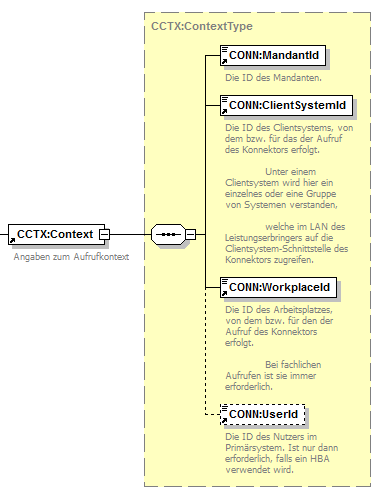
Abbildung 1: ILF_ePA_Element_Context
Der Konnektor ermittelt unter Verwendung von Konfigurationsdaten am Konnektor und der Context-Informationen die zur Laufzeit verfügbaren SM-Bs, die für den Aktenzugriff vom Konnektor herangezogen werden können. Voraussetzung für die Nutzung vieler Funktionsmerkmale ist daher das Vorliegen mindestens einer freigeschalteten SM-B.
Beispiel #: Bsp_ILF_ePA_Context
| <m0:Context> <m1:MandantId>m0001</m1:MandantId> <m1:ClientSystemId>csid0001</m1:ClientSystemId> <m1:WorkplaceId>wpid007</m1:WorkplaceId> </m0:Context> |
|---|
A_22398
Das PS SOLL sicherstellen, dass immer nur ePA-fähige Aufrufkontexte für die Anwendung ePA genutzt werden. ePA-fähig ist ein Aufrufkontext (Context) dann, wenn eine SMC-B verwendet wird, die für die Nutzung der ePA vorgesehen ist. <=
Die konsequente Nutzung der ePA-fähigen Aufrufkontexte kann auch konfigurativ in der konkreten LEI sichergestellt werden.
A_14442
Das PS MUSS mindestens einmal täglich den Sicherheitszustand aller SM-Bs prüfen, die in der LE-Institution verfügbar sind. Im Falle nicht freigeschalteter SM-Bs MUSS das PS den Nutzer auffordern, die Freischaltung der SM-Bs durchzuführen. <=
Die Liste der gesteckten SM-Bs liefert der Systeminformationsdienst (siehe [gemILF_PS#4.1.4]). Der erhöhte Sicherheitszustand bzw. die Freischaltung einer SM-B ist mittels GetPinStatus am Rückgabewert verified erkennbar (siehe [gemILF_PS#4.1.5.4]).
Die Nutzung ePA-fähiger Aufrufkontexte ist in kleineren Einrichtungen mit nur einer einzigen verwendeten SMC-B einfacher umzusetzen als in großen Einrichtungen, in denen es viele verwendete SMC-Bs zu konfigurieren gilt. Besonders sorgfältig sollte dabei das Verhältnis von MandantID und Telematik-ID beachtet werden, falls eine große Institution über mehrere SMC-Bs mit unterschiedlichen Telematik-IDs verfügt.
Der Aufrufkontext referenziert implizit (über die Konfiguration von SMC-B und MandantID) eine Telematik-ID. Die Telematik-ID, die implizit im Aufrufkontext der Berechtigungsvergabe verwendet wird, muss mit der Telematik-ID übereinstimmen, die implizit im Aufrufkontext der Berechtigungsvergabe verwendet wird. Andernfalls kann es unerwünschterweise passieren, dass der Zugriff auf die Dokumentenverwaltung scheitert, weil keine Zugriffsberechtigung vorliegt.
Mandantenverwaltung
Eine Vorraussetzung für eine funktionierende ePA besteht darin, dass die Leistungserbringerinstitution so konfiguriert ist, dass eine 1:1-Beziehung zwischen MandantID und Telematik-ID besteht. Die 1:1-Beziehung zwischen MandantID und Telematik-ID ist für eine zuverlässige Mandantentrennung erforderlich. Voneinander zuverlässig getrennte Mandanten sind jeweils eigenen Telematik-IDs organisatorisch und technisch zugeordnet.
Hinweis: Bei einer n:1-Beziehung zwischen MandantID und Telematik-ID wäre die Datentrennung nicht zuverlässig. Würde eine 1:n-Beziehung zwischen MandantID und Telematik-ID vorliegen, besteht die Gefahr, dass genutzte Mandanten zufällig Telematik-IDs zugeordnet werden.
Das PS kann die 1:1-Beziehung zwischen MandantID und Telematik-ID technisch verifizieren, indem es (Schritt 1) potentiell mehrere SMC-B-Cardhandles der für die ePA im Kontext verwendeten MandantID ermittelt, (Schritt 2) für jede dieser CardHandle per ReadCardCertificate aus der SMC-B das C.HCI.AUT-Zertifikat ausliest, die Telematik-ID extrahiert und (Schritt 3) eine Fehlermeldung anzeigt, falls die ermittelten Telematik-IDs pro MandantID nicht identisch sind.
Wenn es SMC-Bs mit mehr als einer Telematik-ID gibt, muss in der Konfiguration von Konnektor und Primärsystem die fachliche Bedeutung des Aufrufkontextes besondere Beachtung finden:
Lastprobleme vermeiden
Die Operationen getHomecommunityID, getAuthorizationList und getAuthorizationState liefern Informationen, die für alle Clientsysteme und Arbeitsplätze des gleichen Mandanten nutzbar sind. Gleichlautende Anfragen können somit überflüssige Last für beteiligte Komponenten verursachen.
Um diese unnötige Last zu minimieren, die in großen Institutionen für die ePA-Aktensysteme entstehen könnte, soll in großen Institutionen beachtet werden:
Weitere Hinweise zur Nutzung der ePA in Krankenhäusern finden sich auf dem Fachportal der gematik unter
Für die ePA eines Versicherten werden identifizierende Merkmale in unterschiedlicher Form verwendet:
Tabelle 2: Tab_ILF_ePA_Identifier_für_Versicherte_und_Akten
| Datentyp |
Bestandteile |
Format |
Beschreibung |
|---|---|---|---|
| RecordIdentifier |
InsurantId |
Strukturierter Datentyp, s. Abb_ILF_ePA_RecordIdentifier mit der Versicherten-ID als @extension in Verbindung mit der OID für KVNRs als @root |
Kennung des Versicherten, eindeutig über alle verfügbaren Aktensysteme (Verwendung im Kontext der ePA-Administration) |
| HomeCommunityId |
String, gebildet als OID mit 64 Zeichen nach [IHE-ITI-TF3#4.2.3.2.12] [gemSpec_DM_ePA#2.1.4.6] |
Kennung des Aktenanbieters, eindeutig über alle verfügbaren Aktensysteme |
|
| patientID |
String, gebildet aus Versicherten-ID und ihrer OID gemäß [gemSpec_DM_ePA#2.1.4.5] |
Kennung des Versicherten, eindeutig über alle verfügbaren Aktensysteme (Verwendung im Kontext der Dokumentenverwaltung) |
|
An den Konnektor-Schnittstellen werden jeweils entweder der RecordIdentifier oder seine Bestandteile verwendet.
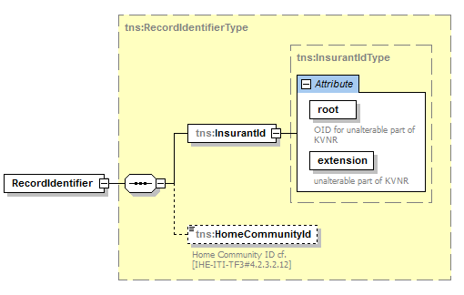
Abbildung 2: Abb_ILF_ePA_RecordIdentifier
A_15640
Das PS MUSS in der Lage sein, aus der Versicherten-ID gemäß [gemSpec_DM_ePA#2.1.4.5] eine InsurantId und eine patientId zu erzeugen, sowie die inhaltsgleichen InsurantId und patientId wechselseitig ineinander zu transformieren. <=
Die LEI wird vom Primärsystem darin unterstützt, die Metadaten für die Aktenzugriffe mit möglichst wenig Pflegeaufwand zu befüllen, und zwar insbesondere durch die
Der lokal hinterlegbare Status des Aktenzugriffs umfasst für einzelne Versicherte in Tab_ILF_ePA_Zugriffsberechtigungsstatus pro RecordIdentifier aufgeführte Informationen. Kap. 5.4.1 (Benachrichtigungen verwalten) beschreibt, wie sich diese Informationen akkumulieren und aktualisieren lassen.
Tabelle 3: Tab_ILF_ePA_Zugriffsberechtigungsstatus pro RecordIdentifier
| Information pro RecordIdentifier |
Wert |
Quellen für Aktualisierungen |
|---|---|---|
| Kennung des Versicherten (Versicherten-ID) |
RecordIdentifier/InsurantId/@extension |
|
| Kennung des Aktenanbieters |
HomeCommunityId |
Anwendungsfall Aktenanbieter ermitteln |
| Vorliegen der Berechtigung, auf seine Akte zuzugreifen; Ablaufdatum Zugriffsberechtigung |
ExpirationDate: Datum, an dem die Zugriffsberechtigung abläuft (letzter Tag der Gültigkeit) |
Anwendungsfälle:
|
| Dokumentenliste |
|
Anwendungsfälle Kapitel 5.2.6, 5.3.1 |
| Zugriffsberechtigung (Typ der Dokumente im Zugriff) |
Einer der Werte der Tabelle Tab_ILF_ePA_Zugriffsberechtigungen) |
Anwendungsfälle Kapitel 5.1.3 |
Die LEI erhält Zugriff auf ePA-Dokumente je nach erteilter Kombination von Zugriffsberechtigungen. Folgende einander ergänzende Zugriffsberechtigungen sind in der ePA möglich:
Tabelle 4: Tab_ILF_ePA_Zugriffsberechtigungen
| Technischer Identifier Zugriffsberechtigung | Anmerkung |
|---|---|
| DocumentCategory: Liste von Identifiern für Dokumentenkategorien gemäß [gemSpec_DM_ePA#Tab_DM_Dokumentenkategorien] |
LEI erhält Zugriffsrecht auf alle aufgelisteten Dokumentenkategorien, soweit es der Festlegung in der AuthorizationConfidentiality, sowie den Zugriffsunterbindungsregeln aus A_19303 nicht widerspricht. |
| AuthorizationConfidentiality="N" |
LEI erhält "Einfaches Zugriffsrecht", auf: Dokumente vom Typ CondidentialityCode normal, falls es nicht den Zugriffsunterbindungsregeln aus A_19303 nicht widerspricht. |
| AuthorizationConfidentiality="R" |
LEI erhält "Erweitertes Zugriffsrecht", auf: Dokumente vom Typ CondidentialityCode normal und restricted, falls es nicht den Zugriffsunterbindungsregeln aus A_19303 nicht widerspricht. Die umfasst auch durch ihn selbst später in der Vertraulichkeitsstufe restricted ("vertraulich") eingestellte Dokumente. |
Das Aktenkonto eines Versicherten kann sowohl beim LE, als auch am ePA-Frontend des Versicherten aktiviert werden (Kap. 5.2.1).
Das PS nutzt die Berechtigungsverwaltung des ePA-Aktensystems über seine Schnittstellen zum Fachmodul ePA.
Leistungserbringerinstitutionen haben zwei Möglichkeiten, vom Versicherten eine Berechtigung zum Aktenzugriff zu erhalten:
Die Berechtigung kann sowohl vom Versicherten selbst stammen, als auch vom Vertreter des Versicherten. Sie ist auf Leistungserbringer (inkl. deren berufsmäßigen Gehilfen oder zur Vorbereitung auf den Beruf Tätige, jedoch nicht die Gehilfen der nichtärztlichen Psychotherapeuten) eingeschränkt, s. [gemSpec_PKI#Tab_PKI_254 Zugriffsprofile für eine Rollenauthentisierung] und [gemKPT_Arch_TIP#Tabelle Zugriffsberechtigter Personenkreis (PK) nach §291a SGB V].
Die Laufzeit von Zugriffsberechtigungen ist begrenzt. Falls eine Zugriffsberechtigung aufgrund in der Vergangenheit liegendem expirationDate oder Berechtigungsentzug am ePA-Frontend des Versicherten nicht mehr existiert, ist eine erneute Berechtigungsvergabe erforderlich, s. [gemSysL_ePA#2.5.2].
Im Falle vorliegender Berechtigung kann das PS den RecordIdentifier des Versicherten ermitteln (Kap. 5.1.5).
Für ein bereits aktiviertes Aktenkonto kann sich eine Kombination der Anwendungsfälle bis hin zu einem lesenden Aktenzugriff beispielhaft folgendermaßen darstellen:
Abbildung 3: Abb_ILF_ePA_Kombinierte_Anwendungsfälle_für_bereits_aktiviertes_Aktenkonto
In technische Abläufe wird der Versicherte oder sein Vertreter über die PIN-Eingabe integriert.
Tabelle 5: Tab_ILF_ePA_Funktionsmerkmale_Beteiligung_Versicherter
| Obligatorische Beteiligung des Versicherten oder seines Vertreters (eGK-Nutzung erforderlich) |
Fakultative Beteiligung des Versicherten oder seines Vertreters (keine eGK-Nutzung) |
|---|---|
| Aktenkonto aktivieren (Kap. 5.1.2) (Nur durch den Versicherten, nicht durch den Vertreter) |
Aktenanbieter der Versicherten ermitteln (Kap. 5.1.1) |
| Ad-hoc-Berechtigung erteilen (Kap. 5.1.3) | Management von Dokumenten:
|
| Benachrichtigungen über Änderungen innerhalb einer Akte erhalten (Kap. 5.3.1) |
Der Vertreter hat seine Vertretungsberechtigung am ePA-Frontend des Versicherten erhalten, wo auch die eGK des Vertreters der ePA des Vertretenen bekannt gemacht wurde. Im Gegensatz dazu benutzt der gesetzlich bevollmächtigte Vertreter die eGK desjenigen, den er vertritt.
Falls ein Vertreter das Aktenkonto aktivieren möchte, kann er dies nur dann tun, falls er ein gesetzlich bevollmächtigter Vertreter ist, der über eGK und PIN des Versicherten verfügt, den er vertritt. Für das Aktivieren des Aktenkontos kann der Vertreter seine eigene eGK nicht verwenden, anders als beim Erteilen der Ad-hoc-Berechtigung.
Für die Durchführung der Aktenkonto-Aktivierung oder der Erteilung der Ad-hoc-Berechtigung durch einen gesetzlich bevollmächtigten Vertreter ist keine darüber hinaus gehende zusätzliche Implementierung am PS erforderlich.
Das komplette Berechtigungskonzept inklusive der Berechtigungsverwaltung am ePA-Frontend des Versicherten liefert [gemSysL_ePA#3.6].
A_15090
Jeder Dokumententransfer (Dokumente einstellen, laden, löschen) MUSS im Übertragungsprotokoll vermerkt werden. <=
Das Aktenmanagement der Leistungserbringer (PHRManagementService) erfolgt weitgehend über das Fachmodul ePA und dort gekapselte Funktionalitäten.
In ActivateAccount und RequestFacilityAuthorization werden eGK und SM-B im freigeschaltetem Zustand verwendet, in GetHomeCommunityID nur die SM-B.
Frau Gundlach ist Patientin bei Herrn Dr. Weber und teilt ihm bei einem vergangenen Arzttermin mit, dass sie seit kurzem ein Aktenkonto bei einem ePA-Provider eingerichtet hat. Dr. Weber ermittelt daraufhin dessen Identifier über eine Funktion seines Primärsystems, und speichert den Identifier des Aktenanbieters von Frau Gundlach daraufhin persistent in der Primärdokumentation des Primärsystems ab.
Für die Nutzung der ePA durch das Primärsystem ist das Vorliegen eines Identifikators für das Aktenkonto des Versicherten (RecordIdentifier) erforderlich, der neben der KVNR auch dessen HomeCommunityID umfasst.
Zur Ermittlung der HomeCommunityID für ein nutzbares Aktenkonto des Versicherten wird die Operation GetHomeCommunityID des PHRManagementService genutzt. Falls eine Akte sich in keinem nutzbaren Zustand befindet, enthält die GetHomeCommunityIDResponse keine HomeCommunityID.
Fachliche Grundlage der Aktenzuordnung ist die Versicherten-ID (KVNR) des Versicherten. Jeder Versicherte hat zur selben Zeit nur ein einzelnes Aktenkonto, falls er über ein Aktenkonto verfügt. Unterschiedliche Versicherte können bei jeweils unterschiedlichen Aktenanbietern ihre Patientenakte hosten lassen. Die Abfrage der verschiedenen möglichen Aktenanbieter übernimmt das Fachmodul für das PS. Jeder Versicherte verfügt über genau eine aktive Akte, auch während er ggf. den Aktenanbieter wechselt.
A_15581
Das PS MUSS es dem Leistungserbringer ermöglichen, für einen Versicherten, über dessen Versicherten-ID er in der Primärdokumentation seines PS verfügt, mittels GetHomeCommunityID die HomeCommunityId des Aktenanbieters zu ermitteln. <=
Das Resultat von Aktenanbieter ermitteln, die HomeCommunityId, wird als Teil des RecordIdentifiers verwendet, sowie separat als Wert bestimmter Metadatenfelder.
A_14660-01
Das PS MUSS eine über GetHomeCommunityID ermittelte HomeCommunityID in der Primärdokumentation des Versicherten speichern. <=
Eine persistente Speicherung der HomeCommunityId (kurz: HCID) beim Datensatz des Versicherten macht eine wiederholte zeitaufwändige Ermittlung der HCID überflüssig. Der einmal ermittelte Status der Akte als aktiviert bei einem bestimmten Aktenanbieter ändert sich höchst selten.
In der Response von GetAuthorizationList() sind HomeCommunityIds enthalten, die versichertenbezogen persistiert werden können, falls noch nicht geschehen.
A_22395
Das PS DARF die HomeCommunityID eines Versicherten nicht erneut abfragen, falls sie bereits in seinen Patientendaten vorliegt. Ausnahme: Ein Fehlerszenario, das darauf hinweist, dass ein Aktenanbieterwechsel erfolgte (nicht Fehler 7290) und somit die Nutzung der ePA mit der alten HomeCommunityID nicht mehr möglich ist. <=
Der Tabelle Tab_ILF_ePA_Handlungsanweisung_im_Fehlerfall ist zu entnehmen, in welchen Fehlerszenarien es sinnvoll ist, getHomeCommunityID aufzurufen (siehe 7404, wobei auch die Hinweise 7401, 7403, 4705, 4706 zu beachten sind).
A_22394
Die Verwendung der HomeCommunityId zur Befüllung des RecordIdentifiers oder im Rahmen der Dokumentenverwaltung MUSS mittels der persistent gespeicherten HomeCommunityId erfolgen. <=
Solange die ePA-Nutzung gering ist, werden viele GetHomeCommunityID-Anfragen negativ beantwortet werden. Da sich der Aktenstatus höchst selten ändert, ist es jedoch nicht sinnvoll, die Anfragen oft zu wiederholen.
A_22397
Falls GetHomeCommunityID keine nutzbare Akte finden konnte (Fehlercode 7290), SOLL die nächste Anfrage erst am nächsten Tag erfolgen. <=
A_15582
Das PS MUSS die Versicherten-ID benutzen, um den Versicherten in seiner Primärdokumentation seiner ePA durch Bildung eines RecordIdentifiers zuzuordnen. <=
Tabelle 6: Tab_ILF_ePA_Operation_getHomeCommunityID
| Operationsname |
GetHomeCommunityID [gemSpec_FM_ePA#7.2.1.1] |
|
|---|---|---|
| Aufrufparameter |
Name |
Implementierung |
| Context |
Aufrufkontext gemäß [ConnectorContext.xsd], s. [gemILF_PS#3.3.1] |
|
| InsurantID |
InsurantIdType, s. Kap. 4.4.2 |
|
| Rückgabeparameter |
Name |
Implementierung |
| Status |
Status nach [gemSpec_Kon#3.5.2] zur Information im PS |
|
| HomeCommunityID |
Anbieterkennung gemäß [gemSpec_DM_ePA#2.1.4.7] |
|
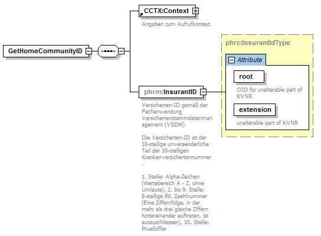
Abbildung 4: Abb_ILF_ePA_getHomeCommunityRequest
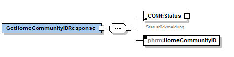
Abbildung 5: Abb_ILF_PS_ePA_getHomeCommunityIDResponse
Die Aktivitäten des Anwendungsfalles Aktenanbieter ermitteln sind:
Vorbedingung:
Auslöser:
Aktivitäten:
Resultat:
Das erfolgreiche Ermitteln einer HomeCommunityId ist kein Beleg für das Vorliegen einer Zugriffsberechtigung auf die Akte des Versicherten. Daher ist die Nutzung der Operation GetHomeCommunityID vor allem im Kontext der Ad-hoc-Berechtigung sinnvoll, oder nach einer Kenntnisnahme davon, dass Leistungserbringer eine Berechtigung über das ePA-Frontend des Versicherten erhalten haben.
Beispiel #: Bsp_ILF_ePA_Request_gethomecommunityid.xml
Wenn das Primärsystem durch eine VSDM-Prüfung von einem Wechsel der Haupt-IK-Nummer an den Daten des Versicherten informiert wird, soll im Falle einer bestehenden Zugriffsberechtigung auf eine Akte der Operation GetHomeCommunityID aufgerufen werden, da ein Wechsel des Aktenanbieters nicht unwahrscheinlich ist.
Frau Gundlach hat bei einem Aktenanbieter einen Vertrag über die Nutzung einer elektronischen Patientenakte abgeschlossen. Sie bittet Dr. Weber darum, für sie das Aktenkonto zu aktivieren. Dr. Weber ermittelt den Aktenanbieter von Frau Gundlach durch Aufruf einer entsprechenden Funktion im PVS und aktiviert dort für Sie ihre Akte. Dabei gibt Frau Weber die PIN ihrer eGK ein.
Zur Umsetzung des "Schritt 2 - Aktivierung in der Umgebung des Leistungserbringers" im Anwendungsfall Aktenkonto einrichten aus [gemSysL_ePA#3.5.1, UC 2.1 - Aktenkonto einrichten, Schritt 2 - Aktivierung in der Umgebung des Leistungserbringers] wird die Operation ActivateAccount des PHRManagementService genutzt.
A_14191
Das PS MUSS es dem Leistungserbringer ermöglichen, mittels ActivateAccount das Aktenkonto des Versicherten zu aktivieren. <=
Das Aktivieren des Aktenkontos wird entweder vom PS-Nutzer über das Userinterface aktiv gestartet oder es wird implizit aus anderen Anwendungsfällen heraus gestartet, in denen das Fachmodul am Status der Akte erkennt, dass die Akte eines Versicherten noch zu aktivieren ist. Das implizite Starten des Anwendungsfalles führt ebenso wie das vom PS angestoßene Starten des Aktenkonto-Aktivierens zu einer Interaktion des Versicherten mit dem Kartenterminal, worüber das PS durch das Event FM_EPA/ ACTIVATE_ACCOUNT/START informiert wird.
Durch seine PIN bestätigt der Versicherte seine Einwilligung dazu, das Aktenkonto in der in den Vertragsunterlagen ausgewählten Konfiguration zu aktivieren.
Tabelle 7: Tab_ILF_ePA_Operation_ActivateAccount
| Operationsname |
ActivateAccount [gemSpec_FM_ePA#7.2.1.1] |
|
|---|---|---|
| Aufrufparameter |
Name |
Implementierung |
| Context |
Aufrufkontext gemäß [ConnectorContext.xsd], s. [gemILF_PS#3.3.1] |
|
| EhcHandle |
Aufbau einer Kartensitzung gemäß [gemILF_PS#4.2] ergibt CardHandle der eGK des Versicherten |
|
| RecordIdentifier |
RecordIdentifier gemäß [gemSpec_DM_ePA#3.1.2], s. Kapitel 5.1.1 |
|
| Rückgabeparameter |
Name |
Implementierung |
| Status |
Status nach [gemSpec_Kon#3.5.2] zur Information im PS |
|
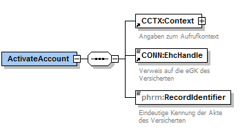
Abbildung 6: Abb_ILF_ePA_Eingabeparameter_ActivateAccount
Die Aktivitäten des Anwendungsfalles Aktenkonto aktivieren sind:
Vorbedingung:
Auslöser:
Aktivitäten:
Resultat:
A_17204
Das PS MUSS bei Erhalt der Events FM_EPA/ ACTIVATE_ACCOUNT/START eine Information an den Nutzer des PS weiterleiten, dass der Versicherte aktuell mit dem Anwendungsfall beschäftigt ist, das Aktenkonto zu aktivieren. <=
Der Versicherte kann so vom Nutzer des PS darauf aufmerksam gemacht werden, dass der Versicherte am Kartenterminal dazu aufgefordert wird, seine PIN einzugeben.
Der Anwendungsfall startet mit der Information des Versicherten, die Aktenaktivierung bereits vorbereitet zu haben, mit einem expliziten Auslösen über das Userinterface des Primärsystems.
Das implizite Aktivieren startet die Aktenkontoaktivierung beispielsweise beim Erteilen einer Ad-hoc-Berechtigung, sofern das Aktenkonto sich in dem Zustand befindet, die ausstehende Aktivierung durchführen zu können. Dabei wird das Event FM_EPA/ ACTIVATE_ACCOUNT/START ausgelöst.
Wenn die Aktivierung des Aktenkontos erfolgreich beendet wurde und sich das Aktenkonto des Versicherten im aktivierten Zustand befindet, löst das ePA-Fachmodul das Event FM_EPA/ ACTIVATE_ACCOUNT/FINISHED aus, das für eine Erfolgsmeldung am Primärsystem genutzt werden kann, um den Versicherten über den Erfolg des Anwendungsfalles zu unterrichten.
Frau Gundlach möchte Herrn Dr. Weber und seiner Hausarztpraxis Zugriff auf ihre ePA erteilen. Im Gespräch mit der Medizinischen Fachangestellte (MFA) von Dr. Weber am Empfangstresen, Frau Kunze, wird besprochen, dass der Zugriff auf alle normalen von Leistungserbringern eingestellte Dokumente erfolgen soll, nicht aber auf die vertraulichen Dokumente von Frau Gundlach. Sie überreicht ihre eGK Frau Kunze. Frau Kunze wählt die besprochene Option am PS. Frau Kunze fordert die Ad-hoc-Berechtigung am PS an und dreht das Kartenterminal mit dem Eingabefeld für die PIN-Eingabe zu Frau Weber. Auf dem Display des Kartenterminals sieht Frau Weber die Aufforderung zur PIN-Eingabe für die Ad-hoc-Berechtigung mit den abgesprochenen Optionen, sowie Dauer der Gültigkeit der Zugriffsberechtigung für die Arztpraxis Dr. Weber. Das PS am Empfangstresen fügt der lokalen Primärdokumentation von Frau Gundlach ein ePA-Kennzeichen als Markierung einer bestehenden Zugriffsberechtigung hinzu.
Zur Umsetzung des Anwendungsfalles Ad-hoc-Berechtigung durch einen Leistungserbringer anfordern aus [gemSysL_ePA#3.6.7, UC 3.7 - Ad-hoc-Berechtigung durch einen Leistungserbringer anfordern] wird die Operation RequestFacilityAuthorization des PHRManagementService verwendet.
A_14200-06
Das PS MUSS es Leistungserbringern ermöglichen, mittels RequestFacilityAuthorization vom Versicherten oder seinem Vertreter eine Ad-hoc-Zugriffsberechtigung auf seine Akte erteilen zu lassen. Dabei wird die Art des gewährten Zugriffs in der AuthorizationConfiguration angegeben, sowie die Dauer der Zugriffsberechtigung im ExpirationDate (heute+6 Tage als Defaultwert). Die AuthorizationConfiguration enthält die vom Versicherten getroffene Festlegung zu folgenden Auswahlmöglichkeiten:
Die Vertraulichkeitsstufe vertraulich (restricted) betrifft Dokumente, die der Versicherte an seinem FdV als vertraulich gekennzeichnet hat, sowie Dokumente, die von Leistungserbringern auf Wunsch des Versicherten als vertraulich eingestellt wurden. Falls eine Freigabe auf Dokumente der Vertraulichkeitsstufe restricted erfolgt, ist damit eine Freigabe auf Dokumente der Vertraulichkeitsstufe normal verbunden.
Es ist nicht möglich, in der Leistungserbringer-Umgebung eine Freigabe auf Dokumente der Vertraulichkeitsstufe very restricted zu erteilen. Auch in anderen Aspekten verfügt die Berechtigungsvergabe am FdV über mehr Optionen als die Berechtigungsvergabe am PS, insbesondere was das Setzen von Dokumenten auf eine Deny- oder Permit-List betrifft. Versicherte, die solche Optionen wählen wollen, verwenden dazu ausschließlich ihr FdV.
A_19408
Das PS MUSS ihren Nutzern geeignete Auswahlmöglichkeiten bieten, um die Optionen der AuthorizationConfiguration.DocumentCategory auszuwählen, insbesondere die Kombination der mit dem Versicherten besprochenen Dokumentenkategorien gemäß [gemSpec_DM#Tab_DM_Dokumentenkategorien], für die eine Freigabe erfolgt. Das Primärsystem MUSS dem Leistungserbringer je nach dem Sektor, in dem er arbeitet, einen konfigurierbaren Defaultwert anbieten, der die Summe aller Kategorien umfasst, die ihm die Zugriffsunterbindungsregeln erlauben. Die Summe der für den Sektor des Primärsystems möglichen Zugriffsrechte ist aus der Tabelle [gemSpec_Dokumentenverwaltung#Tab_Dokv_030 - Zugriffsunterbindungsregeln] abzuleiten.
<=
A_19497
Das PS MUSS dem LE eine Auswahl an Optionen anzubieten, die dem Wunsch des Versicherten entsprechen, eine Zugriffsberechtigung AuthorizationConfiguration aus der Tabelle Tab_ILF_ePA_Zugriffsberechtigungen zu erteilen. Eine leere Auswahl ist nicht zulässig. Erfolgt keine anders lautende Auswahl, MUSS das PS für AuthorizationConfiguration.AuthorizationConfidentiality den Default-Wert normal setzen. Das PS MUSS die ausgewählte Kombination aus Zugriffsberechtigungen im Element AuthorizationConfiguration setzen.
<=Durch die Erteilung einer Ad-hoc-Berechtigung wird eine Konfiguration der Zugriffsrechte erzeugt, die eine bereits bestehende Konfiguration überschreibt. Das betrifft auch ggf. bestehende Konfigurationen, die der Versicherte an seinem FdV vorgenommen hat.
A_19498
Das PS MUSS den RecordIdentifier an der lokalen Patientenakte (Primärdokumentation) persistent speichern, falls die Ad-hoc-Autorisierung erfolgreich verlaufen ist. Zusätzlich MUSS die RequestFacilityAuthorization.AuthorizationConfiguration gespeichert werden, um für denselben Versicherten bei der nächsten Adhoc-Autorisierung dem Versicherten die Option anbieten zu können, dieselben Optionen wie beim letzten Mal zu setzen. <=
Am Aktensystem werden Zugriffe auf Dokumente unterbunden, die nicht den gesetzlich festgelegten berufsgruppenspezifischen Regeln entsprechen. Manche Berufsgruppen verfügen nur über eingeschränkte Zugriffsrechte auf bestimmte Typen von Dokumenten. Die Auswahl von Dokumentenkategorien durch den Versicherten kann diese Zugriffsmöglichkeiten weiter einschränken, nicht jedoch über die gesetzlich festgelegten Rahmenbedingungen hinaus erweitern.
A_19386
Das PS MUSS die in [gemSpec_Dokumentenverwaltung#Tab_Dokv - Zugriffsunterbindungsregeln] aufgeführten Zugriffsunterbindungsregeln beachten, um nicht unnötige Fehlermeldungen zu provozieren. Das PS darf nur solche Dokumentenkategorien zur Auswahl bringen, die der Berufsgruppe der SMC-B entsprechen, die für die Ad-hoc-Berechtigung verwendet wird. <=
Über die Operation ReadCardCertificate kann das PS die Berufsgruppe derjenigen SMC-B ermitteln, die für die ePA-Zugriffe benutzt wird. Im Authentisierungszertifikat C.AUT befindet sich die Berufsgruppe ProfessionOID in der ZertifikatsExtension Admission, s. [gemSpec_PKI#Anhang A].
Die Rolle des Versicherten kann teilweise auch vom Vertreter übernommen werden. In diesem Fall übergibt der Vertreter seine eigene eGK, um eine Ad-hoc-Berechtigung für den Versicherten zu erstellen, für den die Vertretung wahrgenommen wird (identifiziert durch dessen RecordIdentifier, aufgerufen aus der PS-Dokumentation des Vertretenen).
Durch das Starten des Anwendungsfalles aus dem Aktenkonto desjenigen heraus, der vertreten wird, wird dessen RecordIdentifier verwendet. Die Ermittlung desjenigen, der vertreten wird, kann nicht über die eGK des Vertreters erfolgen und muss vielmehr im Dialog mit dem Vertreter durchgeführt werden. Falls für den Vertreter die Vertretungsrechte nicht (mehr) vorliegen sollten, scheitert der Anwendungsfall Ad-hoc-Berechtigung durch den Vertreter erteilen. Dabei wird der Fehler 7209 (Keine Berechtigung für das Aktenkonto vorhanden) geworfen.
Tabelle 8: Tab_ILF_ePA_Operation_RequestFacilityAuthorization
| Operationsname |
RequestFacilityAuthorization [gemSpec_FM_ePA#7.2.1.1] |
|
|---|---|---|
| Aufrufparameter |
Name |
Implementierung |
| Context |
Aufrufkontext gemäß [ConnectorContext.xsd], s. [gemILF_PS#3.3.1] |
|
| EhcHandle |
Aufbau einer Kartensitzung gemäß [gemILF_PS#4.2] ergibt CardHandle der eGK des Versicherten oder seines Vertreters |
|
| AuthorizationConfiguration |
Art und Gültigkeitsendedatum des Zugriffs, den der Versicherte auf seine Akte gewährt. |
|
| RecordIdentifier |
RecordIdentifier mit den Elementen InsurantId und HomeCommunityID |
|
| OrganizationName |
Name der LE-Organisation gemäß Selbstbeschreibung Kap. 6.2, Tab_ILF_ePA_Datenfelder_Selbstauskunft für die Anzeige am Kartenterminal |
|
| InsurantName |
Vor- und Nachname aus der Primärakte des Versicherten, für den eine Berechtigung erteilt wird, für die Anzeige am Kartenterminal. |
|
| Rückgabeparameter |
Name |
Implementierung |
| Status |
Status nach [gemSpec_Kon#3.5.2] zur Information im PS |
|
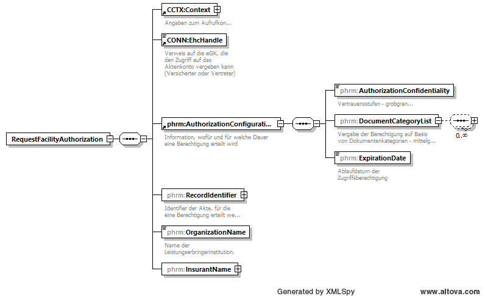
Abbildung 7: Abb_ILF_ePA_RequestFacilityAuthorization
Der Eingabeparameter AuthorizationConfiguration beschreibt
A_15633-06
Das PS MUSS dem LE eine Konfigurationsauswahl gemäß Tabelle Tab_ILF_ePA_Zugriffsberechtigungs-Endedatum anbieten, in der ein Versicherter bestimmt, wie lange er dem LE eine Zugriffsberechtigung erteilt. Außerdem MUSS zusätzlich eine flexible Festlegung möglich sein. Erfolgt keine Festlegung, gilt der Default-Wert. Für die erteilte Berechtigung setzt das PS ein Zugriffsberechtigungs-Endedatum im Element ExpirationDate aufgrund der Berechnung des Datums des letzten Datums ab heute, zu dem die Zugriffsberechtigung noch besteht.
Tabelle 9: Tab_ILF_ePA_Zugriffsberechtigungs-Endedatum
| Werte zur Auswahl | Erläuterung der Berechnung des ExpirationDate | Default-Wert |
|---|---|---|
| 1 Tag | ExpirationDate = heutiges Datum | |
| 7 Tage | ExpirationDate = heutiges Datum + 6 Kalendertage | ja |
| 18 Monate | ExpirationDate = heutiges Datum + 18 Kalendermonate | |
| flexibel | ExpirationDate = beliebiges Datum (heutiges Datum bis 100 Jahre) | |
| unbefristet | ExpirationDate = 31.12.9999 |
Der Versicherte oder ein von ihm berechtigter Vertreter stimmt der Berechtigung auf Aktenzugriff durch PIN-Eingabe am Kartenterminal, in dem die eGK (des Versicherten bzw. des Vertreters) steckt, zu.
Das Primärsystem nutzt beim Erteilen einer Ad-hoc-Berechtigung die Festlegungen zur Vertraulichkeitsstufe (AuthorizationConfidentiality) und die kategoriebasierte Berechtigung (DocumentCategoryList). Dokumentenspezifische Berechtigungen, d.h. Zugriffsberechtigungen, die sich auf einzelne ausgewählte Dokumente beziehen, können am PS nicht gesetzt werden. Dokumentenspezifische Berechtigungen erteilen kann nur der Versicherte an seinem Frontend.
Falls schon eine Berechtigung vorliegt, wird diese durch die Operation überschrieben.
Die Aktivitäten des Anwendungsfalles Ad-hoc-Berechtigung erteilen sind:
Vorbedingung:
Auslöser:
Aktivitäten:
Resultat:
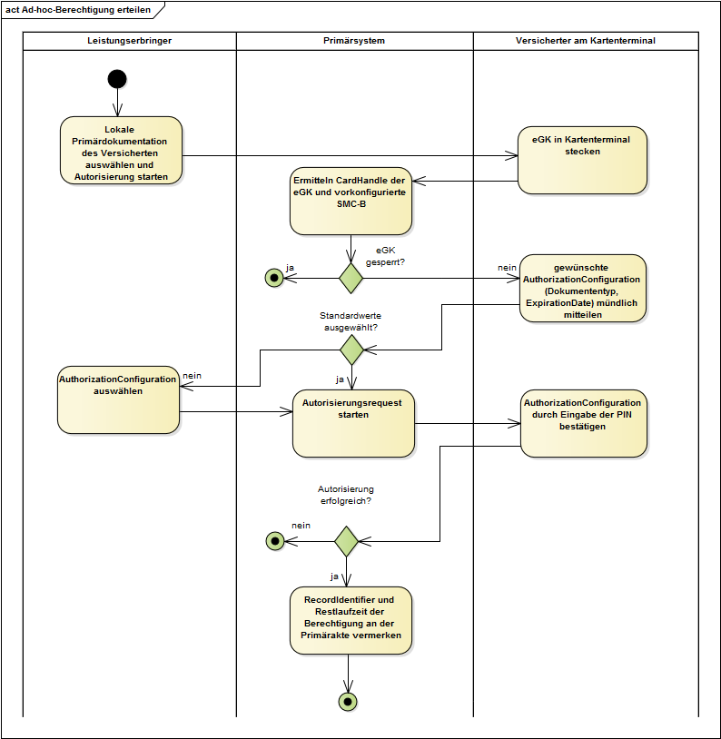
Abbildung 8: Abb_ILF_ePA_Ad-hoc-Berechtigung_erteilen
A_14517
Das PS MUSS den RecordIdentifier an der lokalen Patientenakte (Primärdokumentation) persistent speichern, falls die Ad-hoc-Autorisierung erfolgreich verlaufen ist. Zusätzlich MUSS das Zugriffsberechtigungs-Endedatum ExpirationDate aus RequestFacilityAuthorization.AuthorizationConfiguration.ExpirationDate als Ablaufdatum der Zugriffsberechtigung in der Primärakte des Versicherten gespeichert werden.
<=
Die Ad-hoc-Berechtigung ermöglicht eine Abfrage der Metadaten der ePA-Dokumente und das Anlegen eines lokalen Metadaten-Index für die Dokumente, auf die prinzipiell Zugriffsrechte bestehen, als Vorbereitung von Dokumentenmanagement-Zugriffen.
Die Ad-hoc-Berechtigung kann ein Vertreter für denjenigen durchführen, den er vertritt, falls die Vertreterberechtigung vom Vertretenen am FdV ausgestellt wurde. Ein Versicherter kann einen anderen Versicherten am PS nicht als Vertreter einrichten. Wohl aber kann der Vertreter die am Aktensystem vorliegende Vertreterberechtigung dafür nutzen, einer LEI im Rahmen der Ad-hoc-Berechtigung eine Zugriffsberechtigung auf das Konto des Vertretenen auszustellen.
Dazu muss der Vertretene in der LEI als Patient bekannt sein, jedoch nicht mit seiner eGK physisch anwesend sein. Der Vertreter teilt der LEI mit, für welchen Versicherten er sein Vertreterrecht wahrnehmen möchte, damit für den Vertretenen InsurantId und HomeCommunityID ermittelt werden können.
A_22396
Das PS MUSS anhand der Angaben eines Vertreters denjenigen Patienten in den Patientendaten ermitteln, für den dieser eine Vertretung wahrnehmen möchte, so dass ein RecordIdentifier gebildet werden kann, der die Akte des Vertretenen adressiert. <=
A_22399
Das PS MUSS für die Ad-hoc-Autorisierung der LEI auf das Aktenkonto des Vertretenen (identifiziert durch dessen RecordIdentifier) ermöglichen, dass die eGK des Vertreters im Kartenterminal genutzt wird. Der Vertreter erstellt die Zugriffsfreigabe für die LEI mittels seiner eigenen PIN. <=
Die Praxis von Herrn Dr. Weber hat von verschiedenen Versicherten eine Zugriffsberechtigung auf ihre ePA erhalten. Einmal am Tag, jeweils am frühen Morgen vor Öffnung der Praxis aktualisiert die Praxis die Informationen über die vorliegenden Zugriffsberechtigungen. Dadurch kann den Mitarbeitern der Praxis angezeigt werden, ob auch diejenigen Patienten, die an diesem Tag einen Behandlungstermin haben, eine Zugriffsberechtigung erteilt haben. Eine vorliegende Zugriffsberechtigung wird durch ein Icon am PVS angezeigt, so dass bei Bedarf mit den Patienten darüber geredet werden kann, ob das Erteilen einer Zugriffsberechtigung angeraten ist, und wie die dafür zu erteilende Zugriffsberechtigung gewählt werden sollte.
Durch Aufruf der Operation PHRManagementService::GetAuthorizationList erhält das PS eine Liste sämtlicher zum Zeitpunkt der Abfrage vorliegenden RecordIdentifier, auf die die LEI zugriffsberechtigt ist, sowie das jeweilige Ablaufdatum der Zugriffsberechtigung.
Der LE erhält über die Schnittstelle nicht nur Kenntnis über Zugriffsberechtigungen, die in der Ad-hoc-Autorisierung in seiner LEI erteilt wurden, sondern auch über Zugriffsberechtigungen, die vom ePA-Frontend des Versicherten aus erteilt oder geändert wurden.
Diese Daten stehen jedoch generell unter dem Vorbehalt, dass der Versicherte oder sein Vertreter diese Berechtigung am FdV jederzeit wieder entziehen kann.
Tabelle 10: Tab_ILF_ePA_Operation_GetAuthorizationList
| Operationsname |
GetAuthorizationList [gemSpec_FM_ePA#7.2.1.4] |
|
|---|---|---|
| Aufrufparameter |
Name |
Implementierung |
| Context |
Aufrufkontext gemäß [ConnectorContext.xsd], s. [gemILF_PS#3.3.1] |
|
| Rückgabeparameter |
Name |
Implementierung |
| AuthorizationList |
Liste aller Zugriffsberechtigungen für die LEI |
|
| Status |
Status nach [gemSpec_Kon#3.5.2] zur Information im PS. |
|
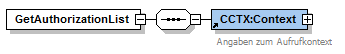
Abbildung 9: Abb_ILF_ePA_Eingabeparameter_GetAuthorizationList
Die AuthorizationList als Liste von Tupeln aus RecordIdentifier und Ablaufdatum der Zugriffsberechtigung erlaubt die Aktualisierung von Info_Neu_Zugriff (über den RecordIdentifier) und Info_Ende_Zugriff (über das validTo-Element), indem die Liste der AuthorizationEntry-Elemente mit der Liste der bisher schon bekannten Berechtigungen auf Aktenzugriff verglichen wird.
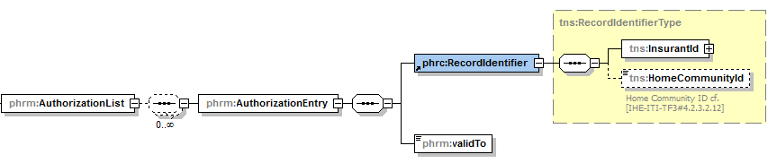
Abbildung 10: Abb_ILF_ePA_GetAuthorizationListResponse
Die Aktivitäten des Anwendungsfalles Sämtliche Berechtigungen der LEI ermitteln sind:
Vorbedingung:
Auslöser:
Aktivitäten:
Resultat:
Die Liste der Autorisierungen, die für eine LEI vorliegen, wird mittels GetAuthorizationList tagesaktuell gehalten. Sie gibt Auskunft auch über Berechtigungen, die der Versicherte für die LEI am FdV vergeben hat. Die Information über die am FdV (und nicht ad-hoc) erteilten Berechtigungen können vom PS dazu genutzt werden, der LEI darüber Auskunft zu geben, dass die Akten bestimmter Versicherten aktuell nutzbar sind, ohne dass mittels RequestFacilityAuthorization oder GetAuthorizationState gezielte Maßnahmen bzw. Prüfungen vorgenommen werden, um diese Aktenkonten nutzbar zu machen.
Falls in der Vergangenheit eine Ad-hoc-Berechtigung erteilt wurde, zu der Details gemäß A_14517-* am PS gespeichert wurden, so können diese Informationen veralten, weil der Versicherte am FdV jederzeit Veränderungen vornehmen kann. Durch die tagesaktuelle Abfrage GetAuthorizationList können Änderungen erkannt werden, die Versicherte im Nachgang zu einer Ad-hoc-Berechtigung vorgenommen haben. In dieser Hinsicht kann die Autorisierungsliste aktueller sein als die aufgrund von A_14517-* am PS gespeicherten Informationen, wobei die bei der Ad-hoc-Berechtigung gespeicherten Daten detaillierter sind, denn sie umfassen zusätzlich die am Kartenterminal vergebenen Berechtigungskategorien.
A_19008-02
Das PS DARF den Request getAuthorizationList NICHT öfter als einmal pro Tag stellen. Abfragen, die zu häufig ausgeführt werden, führen zu Fehlerszenarien.
<=
Der Konnektor wirft im Falle einer zu häufigen Anfrage von getAuthorizationList den Fehler 7231. Falls es eine Response mit der Warning 7230 gibt, konnten nicht alle Aktensysteme erfolgreich angefragt werden. Sowohl beim Fehler 7231, als auch bei der Warning 7230 darf nicht sofort ein Retry von getAuthorizationList durchgeführt werden.
Informationen über die erhaltenen Berechtigungen helfen dabei, die ePA-Nutzung im Vorfeld der Öffnung einer Praxis für den Besucherverkehr vorzubereiten. Sie sollten, um Spitzenlasten zu vermeiden, außerhalb der Hauptverkehrszeiten erfolgen. Keinesfalls darf ein getAuthorizationList vor jedem einzelnen Aktenzugriff erfolgen.
A_22388-05
Das PS SOLL GetAuthorizationList in den Nebenzeiten nutzen, bevorzugt nachts. Dabei MÜSSEN die Anfragen über die Clients eines Primärsystems hinweg betrachtet statistisch verteilt werden.
<=
A_17143-01
Das PS MUSS das Ergebnis der Operation GetAuthorizationList (Liste von Tupeln aus RecordIdentifier und ExpirationDate)bis zum Ablauf der Berechtigungen persistieren. Falls die AuthorizationList Versicherten-IDs enthält, die dem Primärsystem nicht bekannt sind, so dass sie keiner Primärdokumentation und keinem bestehenden oder vergangenen Behandlungskontext entsprechen, kann dieser RecordIdentifier verworfen werden. <=
Das PS erhält Kenntnis vom Aktenanbieterwechsel eines Versicherten über die GetAuthorizationListResponse, in der die aktualisierte HomeCommunityId des neuen Aktenanbieters enthalten ist
Sobald ein Versicherter den Aktenanbieter gewechselt hat, wird der alte RecordIdentifier (zum alten Aktenanbieter) aus der AuthorizationEntry-Liste entfernt. Beim Aktenanbieterwechsel wird die Berechtigung der LEI in die neue Akte transferiert, so dass ein neuer RecordIdentifier in der AuthorizationEntry-Liste erscheint. Anhand der bekannten InsurantId kann das PS feststellen, dass der bekannte Versicherte die Akte gewechselt hat, so dass der in der Primärakte für den Versicherten dokumentierte RecordIdentifier im PS aktualisiert werden kann.
Das Ergebnis von GetAuthorizationList wird anhand der Telematik-ID der SMC-B gebildet, die aufgrund der Angaben im Context verwendet wird. Für größere Institutionen, etwa Krankenhäuser, die über eine Vielzahl von SMC-Bs verfügen, gilt:
Frau Gundlach tritt an den Tresen der Arztpraxis Dr. Weber, um sich für ihre erste Schwangerschaftskontrolluntersuchung zu melden. Aufgrund der täglich ermittelten Zugriffsberechtigungsliste sieht die Arzthelferin in der GUI ihres PVS, dass Frau Gundlach der Arztpraxis noch keine ePA-Zugriffsberechtigung erteilt hat, so dass die Ergebnisse der Untersuchung noch nicht in den elektronischen Mutterpass eingetragen werden können. Weil das Kartenterminal gerade durch andere Patienten belegt ist, kann eine Ad-hoc-Berechtigung aktuell nicht durchgeführt werden. Frau Gundlach verspricht, die Berechtigung an ihrem Mobiltelefon, bzw. ihrem FdV zu erteilen, während sie im Wartezimmer auf den Termin mit Dr. Weber wartet. Sie vergibt die Zugriffsberechtigung für 12 Monate. Die Arzthelferin möchte einige Zeit später erste Daten in den elektronischen Mutterpass von Frau Gundlach eintragen. Um unnötigen Fehlern vorzubeugen erfragt sie gezielt, ob Frau Gundlach diese Berechtigung inzwischen erteilt hat. Frau Gundlach hat die Berechtigung im Wartezimmer erteilt. Die Arzthelferin trägt erste Daten in den Mutterpass von Frau Gundlach ein.
Leistungserbringer können mittels der Operation GetAuthorizationState gezielt abfragen, ob ein bestimmter Versicherter der eigenen LEI eine ePA-Zugriffsberechtigung erteilt hat, und welches das Ablaufdatum ist.
Die KVNR des Versicherten wird im RecordIdentifier an der Schnittstelle übergeben, zusammen mit dem Parameter UserAgent, der vom Primärsystem automatisiert befüllt wird.
Die Rückgabe beinhaltet eine Liste von Ablaufdaten für Berechtigungen, die jeweils auf eine Anwendung bezogen sind. Für die Anwendung Elektronische Patientenakte wird der Wert "ePA" mit dem Ablaufdatum der ePA-Berechtigung als Listenelement mitgeliefert.
Tabelle 11: Tab_ILF_ePA_Operation_GetAuthorizationState
| Operationsname |
GetAuthorizationState [gemSpec_FM_ePA#7.2.1.5] |
|
|---|---|---|
| Aufrufparameter |
Name |
Implementierung |
| Context |
Aufrufkontext gemäß [ConnectorContext.xsd], s. [gemILF_PS#3.3.1] |
|
| RecordIdentifier | RecordIdentifier gemäß [gemSpec_DM_ePA#2.2]; | |
| UserAgent | UserAgent gemäß A_22470-* | |
| Rückgabeparameter |
Name |
Implementierung |
| AuthorizationStatusList |
Liste der Berechtigungen für existierende Fachanwendungen, insbesondere ePA, s. [gemSpec_FM_ePA#7.2.1.5] |
|
| Status |
Status nach [gemSpec_Kon#3.5.2] |
|
Die Angabe des UserAgents dient der Performance-Rohdatenerfassung und wird ohne kundenspezifische Angaben ausschließlich durch firmwarespezifische Angaben des PS-Herstellers gemäß [gemSpec_DM_ePA#A_22470-*] gebildet.
Die Aktivitäten des Anwendungsfalles Einzelne Berechtigungen der LEI ermitteln sind:
Vorbedingung:
Auslöser:
Aktivitäten:
Resultat:
GetAuthorizationState ist geeignet, um in konkreten Nutzungsszenarien gezielte Abfragen für einzelne Versicherte zu tätigen. Falls Informationen für eine Vielzahl von Versicherten eingeholt werden sollen, sollte abgewogen werden, ob die Nutzung von GetAuthorizationList nicht effektiver ist, auch wenn sie nur einmal täglich durchgeführt werden darf.
Die durch GetAuthorizationList gebildete Autorisierungsliste, die für eine LEI vorliegen, umfasst auch Berechtigungen, die der Versicherte am FdV vergeben hat, und sind tagesaktuell. Die Operation GetAuthorizationState bildet in zwei Fällen eine Ergänzung bzw. eine Alternative:
Sowohl GetAuthorizationList als auch GetAuthorizationState erfassen Berechtigungen, die der Versicherte ad-hoc oder am FdV vergeben hat.
A_22480
Das PS MUSS zwischen zwei getAuthorizationState Requests für den gleichen Versicherten einen zeitlichen Abstand von 10 Minuten einhalten. Abfragen, die für einen Versicherten zu häufig ausgeführt werden, werden vom Konnektor abgewiesen. <=
Der Konnektor bietet dem PS mit dem Dienst PHRService eine Dokumentenverwaltung auf Basis einer Profilierung der IHE-Spezifikationen rund um das Kernprofil XDS.b (Cross-Enterprise Document Sharing) an.
Tabelle 12: Tab_ILF_ePA_PHRService
| Name |
PHRService [gemSpec_FM_ePA#7.1] |
|
|---|---|---|
| Version |
2.0.1 |
|
| SOAP-Header |
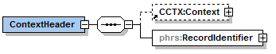 |
|
| Namensraum |
urn:ihe:iti:xds-b:2007 |
|
| Abkürzung Namensraum |
ihe |
|
| Operationen |
Name |
Implementierungshinweise |
| DocumentRepository_ProvideAndRegisterDocumentSet-b |
Profilierung von [ITI-41], s. Kap. 5.2.1 |
|
| DocumentRegistry_RegistryStoredQuery |
Profilierung von [ITI-18], s. Kap. 5.2.2 |
|
| DocumentRepository_RetrieveDocumentSet |
Profilierung von [ITI-43], s. Kap. 5.2.3 |
|
| DocumentRegistry_RemoveMetadata |
Profilierung von [ITI-62], s. Kap. 5.2.5 |
|
| WSDL |
gemäß:
|
|
| XML-Schema |
PHRService.xsd |
|
Tabelle 13: Tab_ILF_ePA_DM_Profilierung
| Profilierungen des Kernprofiles XDS.b |
|
|---|---|
| Anwendungsfall |
IHE-Schnittstelle |
| Dokumente einstellen |
DocumentRepository_ProvideAndRegisterDocumentSet-b [ITI-41] |
| Dokumente suchen |
Registry Stored Query [ITI-18] |
| Dokumente laden |
Retrieve Document Set [ITI-43] |
| Dokument löschen (auch in Ordnern) |
Remove Metadata [ITI-62] |
Tabelle 14: Tab_ILF_ePA_Einschränkungen_auf_XDS.b
| Einschränkungen von XDS.b im Rahmen der IHE-Profilierung |
Referenz |
|---|---|
| Kein asynchrones Kommunikationsmuster |
nicht umgesetzt: [ITI TF-1#10.2.5] |
| Beschränkung der Dokumentenformate je nach Ausbaustufe |
Kap. 6.3, [gemSpec_DM_ePA#A_14760] |
| Beschränkung auf RPLC (replace) analog zu Document Replacement Option |
[gemSpec_Dokumentenverwaltung#A_14941] |
A_14418
Das PS MUSS bei der Umsetzung der IHE XDS-Transaktion [ITI-41] zur Übertragung von Dokumenten eine Kodierung mittels MTOM/XOP [MTOM] gemäß [IHE-ITI-TF2x#V.3.6.] verwenden. <=
A_15084
Das PS MUSS in der Dokumentenverwaltung die SOAP-Nachricht konform zu [SOAP 1.2] bilden. <=
Die Anwendungsfälle des Dokumentenmanagements der Akte erfordern, dass der Nutzer die Berechtigung hat, auf mindestens eine SM-B zuzugreifen, die für die LE-Institution vorliegt und dass eine durch eine Telematik-ID identifizierte Institution oder ein durch eine Telematik-ID identifizierter Teil einer Institution eine Berechtigung erhalten hat. Um diese Berechtigung durchzusetzen ist eine Konfiguration am Konnektor administrativ zu pflegen und vom PS zu nutzen.
Drei Elemente des Aufrufkontextes eines SOAP-Clients geben bei einem Zugriff des Dokumentenmanagements im SOAP-Header darüber Auskunft, von welchem Clientsystem-Arbeitsplatz ein Aufruf auf welche Akte erfolgt:
Tabelle 15: Tab_ILF_ePA_ClientInformationen
| Name SOAP-Header-Element |
Quelle |
optional, falls Defaultwert genutzt wird |
|---|---|---|
| MandantID |
Context/MandantId |
ja
|
| ClientSystemID |
Context/ClientSystemId |
ja
|
| WorkplaceID |
Context/WorkplaceId |
ja
|
| RecordIdentifier |
RecordIdentifier |
nein
|
Die interne Mandantenverwaltung des PS SOLL auf die WS-Kommunikation der ePA über die Nutzung der MandantID abgebildet werden. Die MandantID steht für die Kennung der PS-Mandanten. Die Konfiguration von PS-Mandanten, SM-Bs und Arbeitsplätzen wird in [gemILF_PS] geschildert, die Konfiguration für größere LE-Institutionen mit mehreren SM-Bs oder Mandanten in Kapitel 3.3.3.
Der Nutzer ist durch die lokale Mandantenverwaltung seines Primärsystems berechtigt auf die Primärdokumentation des Versicherten zuzugreifen und wird durch die Konfiguration der Mandantenverwaltung im Konnektor derjenigen SM-B zugeordnet, die er für den Zugriff auf die Akte benötigt.
In der Administrationsoberfläche des Konnektors wird gemäß [gemSpec_Kon#10.3.1.1] im Informationsmodell der LE-Institution die Default-SM-B der Arbeitsplätze, Clientsysteme und Kartenterminals für den Zugriff auf die ePA konfiguriert. Für die Administration des Default-Aufrufkontextes s. [gemSpec_FM_ePA#6.4].
Ad-hoc-Berechtigung erteilen ist nicht davon abhängig, ob für eine LEI eine oder mehrere SM-Bs im Verzeichnisdienst eingepflegt sind. Falls mehrere SM-Bs in einer LEI verwendet werden, sind die unterschiedlichen Primärsystem-Arbeitsplätze erst dann zugriffsberechtigt, wenn der Aufrufkontext oder der Default-Aufrufkontext SMC-Bs mit derjenigen Telematik-ID zugeordnet sind, für die eine Berechtigung erteilt wurde.
A_14475
Falls der LE-Institution nur eine einzelne Telematik-ID zugeordnet ist, KANN das PS die in Tab_ILF_ePA_ClientInformationen aufgeführten Parameter des SOAP-Headers in jedem Zugriff des Dokumentenmanagements verwenden. <=
Wenn der Parameter nicht gesetzt wird, verwendet das Fachmodul ePA den in der Konnektorkonfiguration hinterlegten Default-Wert.
A_14476
Falls der LE-Institution mehrere Telematik-ID zugeordnet sind, MUSS das PS die in Tab_ILF_ePA_ClientInformationen aufgeführten Parameter des SOAP-Headers in jedem Zugriff des Dokumentenmanagements verwenden. <=
A_14698
Für die Weiterverarbeitung auf Dokumentenebene MÜSSEN Zugriffsinformationen gemäß Tab_ILF_ePA_Zugriffsinformation_Werte zusätzlich in die Metadaten der Dokumentenmanagement-Zugriffe eingestellt werden:
Tabelle 16: Tab_ILF_ePA_Zugriffsinformation_Werte
| Zugriffsinformationen | IHE-Schnittstellen | Wertgleiches Request-Attribut |
|---|---|---|
| InsurantId |
[ITI-41], [ITI-18] | XDSSubmissionSet.patientID |
| [ITI-41], [ITI-18] | XDSDocumentEntry.patientID | |
| [ITI-41], [ITI-18] | XDSDocumentEntry.sourcePatientId | |
| HomeCommunityID | [ITI-43] | XDSDocumentEntry.repositoryUniqueID |
| [ITI-43] | XDSDocumentEntry.HomeCommunityID | |
| [ITI-86] | DocumentRequest.RepositoryUniqueID |
Das Ersetzen eines Dokumentes ist als Kombination mehrerer Anwendungsfälle umzusetzen: Nach dem Ermitteln (Suchen, Kap. 5.2.2) und Löschen des zu ersetzenden Dokumentes (Kap. 5.2.5) nach Rücksprache mit dem Versicherten wird das ersetzende Dokument (als "Original"-Dokument, s. A_14250) in die ePA eingestellt (Kap. 5.2.1).
Herr Dr. Weber hatte für Frau Gundlach vor einigen Monaten einen Notfalldatensatz auf ihre eGK geschrieben. Dr. Weber bespricht mit Frau Gundlach, ihren Notfalldatensatz auch in ihre ePA einzustellen. Frau Gundlach erteilt eine Ad-hoc-Berechtigung für diesen Zugriff. Bei Auswahl der entsprechenden Funktion nutzt Dr. Weber die Möglichkeit, die Metadaten zu kontrollieren, mit denen der Notfalldatensatz automatisch für die Akte von Frau Gundlach konnotiert werden. Dr. Weber nimmt kurz Notiz von der Bestätigungsmeldung über den Erfolg des Einstellens.
A_15653
Das PS MUSS es dem Leistungserbringer ermöglichen, ePA-Dokumente in die Akte eines Versicherten einstellen zu können. Dafür MUSS das PS die Konnektorschnittstellenoperation ProvideAndRegisterDocumentSet-b verwenden. <=
Zur Umsetzung des Anwendungsfalles Dokumente durch einen Leistungserbringer Einstellen aus [gemSysL_ePA#3.7.1, UC 4.1 - Dokumente durch einen Leistungserbringer einstellen] wird Provide & Register Document Set-b [ITI-41] gemäß Cross-Enterprise Document Reliable Interchange (XDR) Profile profiliert.
Tabelle 17: Tab_ILF_ePA_IHE-Profilierung_ITI41
| IHE-Konzept |
Wert |
Referenz |
|---|---|---|
| PS als IHE Akteur |
XDR Document Source |
[IHE ITI-41] |
| XDR Document Source Options |
keine |
[IHE ITI-41#3.41.4.1.2.1] |
| Document Relationships [ITI TF-3#Table4.2.2.2-1] |
RPLC (replace) analog zu Document Replacement Option einer XDS.b Document Source |
[ITI TF-1#10.2.2] und [ITI TF-1#10.2.3] |
| SOAP-Action |
urn:ihe:iti:2007:ProvideAndRegisterDocumentSet-b |
[IHE ITI-41#3.41.4.1.2] |
Die Unterstützung für RPLC (replace) hat zur Folge, dass Dokumente ersetzt werden können durch eine neue Version des gleichen Dokuments. Das hat zur Folge, dass das alte Dokument in den Status (DocumentEntry.availabilityStatus) "Deprecated" wechselt und mit dem neuen Dokument (Status "Approved") über eine "RPLC"-Association verbunden wird. Der AvailabilityStatus wird beim Dokumente einstellen ausschließlich vom Aktensystem automatisiert gesetzt bzw. geändert.
Das Fachmodul ePA bietet zur logischen Schnittstelle I_PHR_Management am Webservice PHR_Service (analog IHE-Dienst DocumentRepository) die Operation DocumentRepository_ProvideAndRegisterDocumentSet-b an, und übernimmt gemäß [ITI-41] die Rolle eines IHE DocumentRepository gegenüber dem PS.
Tabelle 18: Tab_ILF_ePA_Operation_Dokument_einstellen
| Operationsname |
DocumentRepository_ProvideAndRegisterDocumentSet-b [gemSpec_FM_ePA#7.1.1.1] |
|
|---|---|---|
| Aufrufparameter |
Name |
Implementierung |
| ProvideAndRegisterDocumentSetRequest |
[ITI-41#3.41.4.1.2] |
|
| Rückgabeparameter |
Name |
Implementierung |
| RegistryResponse |
[ITI-41#3.41.4.2] |
|
A_14201
Das PS MUSS bei vorliegender Berechtigung Dokumente in die Akte eines Versicherten einstellen können. Das Primärsystem MUSS im Dienst PHRService des Konnektor-Fachmoduls die Operation DocumentRepository_ProvideAndRegisterDocumentSet-b nutzen [gemSpec_FM_ePA#7.1.1.1] und dazu schemakonforme SOAP-Nachrichten erstellen können. <=
Generell besteht ein Schreibrecht im Rahmen der Zugriffsunterbindungsregeln, sobald eine LEI über irgendeine Art von Zugriffsberechtigung verfügt. Vor dem Einstellen von MIOs des Typs Mixed oder Uniform (MIOs in statischen Ordnern, d.h. alle MIOs bis auf Mutterpass und U-Heft) sollen jedoch bereits bestehende fachliche MIO-Inhalte geprüft werden, so dass sichergestellt werden kann, dass die neu einzustellenden MIO-Daten konsistent sind zu den bereits bestehenden.
A_22523-03
Das PS MUSS beim Einstellen von MIOs die entsprechenden statischen Ordner gelesen haben, damit bereits bestehende Daten fachlich gewürdigt werden können. Dafür ist ein FindFolders für die gewünschten MIO-Kategorien erforderlich. Falls ein FindFolders auf eine Kategorie mit statischen Ordnern keine Ordnerreferenz liefert, besteht keine Leseberechtigung für diese Kategorie. <=
Dynamische Ordner sind bei fehlenden Zugriffsrechten für das PS nicht zu ermitteln, so dass sich nicht feststellen lässt, ob dynamische Ordner bereits angelegt wurden. Auch ist nicht ohne schreibenden Zugriff und Auswertung der Fehlermeldung zu ermitteln, dass hier ein Zugriffsrecht fehlt. Der IHE-Fehlercode DocumentAccessNotAuthorized informiert darüber, dass eine Vergabe von Zugriffsrechten für Sammlungstypen mixed und uniform erforderlich ist, um Dokumente erfolgreich einstellen zu können. Dabei muss die Vertraulichkeitsstufe der Kategorienberechtigung vom Versicherten passend gewählt werden.
Dokumente, die auf einer Denylist stehen oder für die aufgrund der Vertraulichkeitsstufe keine Leseberechtigung besteht, sind für das PS nicht zu ermitteln.
Durch das Auslesen von (MIO)-Foldern und die fachliche Sichtung der bereits bestehenden Daten im Vorfeld des Schreibens können folgende Probleme im Vorfeld verhindert werden:
A_14253-01
Das PS MUSS Metadaten ausschließlich aus der im [gemSpec_DM_ePA] aufgeführten Menge von Metadaten entnehmen. Das Primärsystem MUSS Dokumente, denen es keine passenden Metadaten zuweisen kann, von der Auswahl der einzustellenden Dokumente ausschließen. Das PS MUSS das Metadatenobjekt XDSDocumentEntry entsprechend den Vorgaben aus dem Datenmodell [gemSpec_DM_ePA#Tabelle Nutzungsvorgaben für Metadatenattribute XDS.b] befüllen. Das PS MUSS alle mit der Kardinalität [1..1] markierten Metadatenfelder setzen. <=
Hinweis: In seltenen Fällen werden im vorliegenden Dokument Anforderungen formuliert, die Felder zu Pflichtfeldern erklären, auch wenn sie im Datenmodell [gemSpec_DM_ePA#Tabelle Nutzungsvorgaben für Metadatenattribute XDS.b] noch als optional [0..1] gekennzeichnet sind. In diesen Fällen wird eine Verschärfung der Prüfpflichten des Aktensystems erst noch eingeführt. Sobald die Kardinalität [1..1] festgeschrieben ist, muss das Aktensystem abweichende Requests abweisen.
Die Auswahl der Metadaten soll möglichst weitgehend automatisiert werden.
A_16194
Bei der Auswahl der Metadaten zum Zwecke des Einstellens von Dokumenten MUSS das PS insbesondere im Falle erforderlicher Auswahldialoge beachten:
A_20179-01
Beim Einstellen von Dokumenten MUSS das PS für jedes Dokument eine Vertraulichkeitsstufe wählen, die dem Wunsch des Versicherten entspricht, d.h. entweder "streng vertraulich" (very restricted), "vertraulich" (restricted) oder "normal" (normal). <=
Eine entsprechende Absprache zwischen LEI und Versichertem muss nicht zwangsläufig explizit für jedes einzelne Dokument getroffen werden, sondern kann auch im Vorfeld stattfinden, z. B. über eine Vereinbarung über die Vertraulichkeitsstufe von bestimmten Dokumententypen oder ähnliche Mechanismen.
A_20517-02
Das PS MUSS beim Einstellen von Dokumenten die Kategorien beachten, zu denen Dokumente gehören. Dabei werden Kategorien durch zwei Arten von Foldern umgesetzt:
Dokumente werden statischen Ordnern automatisch am Aktensystem aufgrund der vergebenen Metadaten zugeordnet. Dokumente werden dynamischer Ordnern (mothersrecord und childsrecord) hingegen durch das PS zugeordnet.
Ob das U-Heft in die Akte des Kindes oder der gesetzlichen Vertreter eingestellt werden soll, regeln fachlichen Vorgaben in [KBV-UHeft]. Die technische Lösung der ePA2 ist für das U-Heft hinsichtlich der zu wählenden Akte flexibel.
A_22515
Das PS MUSS beim Einstellen von Dokumenten documentEntry.title belegen. Falls möglich soll der Titel des Dokumentes eine fachliche Beschreibung des Dokumentes enthalten. <=
A_22514-01
Der Leistungserbringer legt bei Bedarf dynamische Ordner an (childsrecord, mothersrecord). Bei der Anlage dynamischer Ordner MUSS das PS das Metadatum Folder.title folgendermaßen setzen:
Der errechnete Entbindungstermin im mothersrecord wird mit dem initial errechneten Wert befüllt. Eine spätere Änderung des Ordnernamens ist zur Identifizierung der Schwangerschaft nicht erforderlich, auch wenn zu einem späteren Zeitpunkt ein anderer Entbindungstermin errechnet werden sollte.
A_20180-03
Falls das hochzuladende Dokument in die Kategorien mit dynamischen Ordnern fällt (mothersrecord und childsrecord, siehe [gemSpec_DM_ePA#Tab_DM_Dokumentenkategorien]), MUSS das PS das hochzuladende Dokument genau einem der dynamischen Ordner zuweisen, indem es das Dokument in den entsprechenden Ordner hochlädt. Dazu MUSS das PS beim Einstellen im SubmissionSet mit dem DocumentEntry eine zusätzliche Association (FD-DE-HasMember) hinterlegen, die den DocumentEntry mit dem für die gewünschte Unterkategorie bereits existierenden Ordner über ihre jeweilige entryUUID verbindet, vgl. u.a. [IHE-ITI-TF3#4.2.1.3]. <=
Die entryUUID des Ordners kann z. B. über die Suche FindFolders mit entsprechendem Filter auf Folder.codeList ermittelt werden.
A_14932
Das PS MUSS eine DocumentEntry.UniqueID gemäß [ITI-TF-3#4.2.3.2.26] erstellen. Für die Dokumentenverwaltung im ePA-Aktensystem wird die DocumentEntry.UniqueID in die Metadaten der IHE-Nachrichten eingestellt:
Das PS soll die DocumentEntry.UniqueID gemäß [ITI-TF-3#4.2.3.2.26] nicht nur für das Laden von Dokumenten, sondern auch in der Primärakte verwenden. Eine aktenweit eindeutige DocumentEntry.UniqueID ermöglicht dem PS eine zuverlässige Benachrichtigungsverwaltung (s. Kap. 5.3.1 und Kap. 5.2.3).
Wenn für das Feld SubmissonSet.AuthorPerson keine Person als Einsteller angegeben werden kann, ist das Feld mit Werten zu befüllen, mit denen die einstellende Softwarekomponente beschrieben wird. Laut gemSpec_DM_ePA#A_14762* wird die Softwarekomponente eines Geräts als Nachname und ggf. als Vorname(n) eingetragen.
Beispiel: ^PHR-Gerät-XY^PHR-Software-XY
Die Aktivitäten des Anwendungsfalles Dokumente einstellen sind:
Vorbedingung:
Auslöser:
Aktivitäten:
Resultat:
Beispiel #: Bsp_ILF_ePA_ProvideAndRegisterDocumentSetRequest
XDS-Option „Document Replacement“ - Ersetzen eines existierenden Dokuments
Ein eingestelltes Dokument kann auch ein existierendes Dokument ersetzen. Dies erfolgt durch Verwendung der „Document Replacement“-Option. Dazu wird das gleiche Dokument (mit geändertem Inhalt und nebst ggf. geänderten DocumentEntry-Metadaten) erneut hochgeladen. Das neue Dokument erhält den Status „Approved“. Das alte Dokument geht in den Status „Deprecated“. Beide Dokumente werden über eine „Replace“-Assoziation miteinander verbunden, so dass nach dem Einstellen erkennbar ist, dass das neue Dokument das alte ersetzt. Lädt man erneut eine neue Fassung hoch, erhält man analog zwei Dokumente im Status "Deprecated" und das neueste im Status "Approved".
Alle alten Dokumente (Status "Deprecated") können nach wie vor gefunden und heruntergeladen werden. Einige Suchen erlauben das Filtern nach Status bzw. zeigen per Default auch nur Dokumente im Status „Approved“ an.
Eingestellt (im „Submission Set“) wird das neue Dokument inkl. DocumentEntry-Metadaten, ein Verweis auf das alte Dokument und die verbindende „Replace“-Association (urn:ihe:iti:2007:AssociationType:RPLC).
Das Ersetzen eines existierenden Dokuments mit der XDS-Option „Document Replacement“ eignet sich dafür, eine Änderung an einem bereits bestehenden Dokument abzubilden. Dies gilt insbesondere für Dokumente, bei denen es zu jedem Zeitpunkt nur eine einzige gültige Dokumentenversion gibt, etwa für den Notfalldatensatz, den elektronischen Medikationsplan und den Datensatz persönliche Erklärungen.
Durch Setzen von Metadaten Dokumente werden gemäß gemSpec_DM_ePA#A_19388-* je unterschiedlichen Foldern zugeordnet. Beim Hochladen eines Dokumentes mittels DocumentRepository_ProvideAndRegisterDocumentSet-b bei Nutzung der RPLC-Option gilt es zu verhindern, dass ein Dokument beim nachfolgenden Hochladen eine andere Folderzuordnung erhält als beim initialen Hochladen. Eine Änderung der Folderzuordnung hätte Einfluss auf die Freigabeentscheidung des Versicherten. Die vollständige Liste der Dokumenten-Kategorien, wie sie dem Versicherten am Kartenterminal bei der Ad-Hoc-Berechtigung angezeigt werden, findet sich in [gemSpec_FM_ePA#Tab_FM_ePA_042 - Mapping von DocumentCategoryEnum auf Anzeigetext am Kartenterminal].
A_23329
Das Primärsystem MUSS sich beim Hochladen eines Dokumentes mittels DocumentRepository_ProvideAndRegisterDocumentSet-b bei Nutzung der RPLC-Option an Metadaten die Werte des bestehenden Dokumentes unverändert lassen, da diese Einfluss auf die Zuordnung des Dokumentes zu Foldern haben. Dies betrifft insbesondere die Metadaten:
Korrekturen an den genannten Metadaten müssen durch Löschen und Neueinstellung des Dokumentes realisiert werden.
Dokumente, die Leistungserbringer einstellen, werden unabhängig vom Inhalt des Dokumentes als LE-Dokumente (Kennzeichnung über entsprechende Auswahl aus SubmissionSet.AuthorRole, siehe [gemSpec_DM_ePA#2.1.4.1], und dem konfigurierten XDSDocumentEntry.healthcareFacilityTypeCode) kategorisiert, um sie von Dokumenten zu unterscheiden, die vom Versicherten selbst (SubmissionSet. AuthorRole="102") oder von Kostenträgern (SubmissionSet.AuthorRole="105") eingestellt wurden. Das heißt u.a., dass die Codes für Versicherte und Kostenträger ("102" und "105") dabei explizit nicht verwendet werden dürfen.
A_15621-02
Das PS MUSS die von der LEI eingestellten Dokumente kategorisieren:
A_14251
Das Primärsystem MUSS die in die ePA einstellbaren Dokumententypen aus [gemSpec_DM_ePA#A_14760] in die ePA einstellen können.
<=Beispiel #: Bsp_ILF_ePA_ProvideAndRegisterDocumentSetResponse
In [gemSpec_DM_ePA#A_14760] ist beschrieben, bei Einhaltung welcher Vorgaben konsistente Metadaten für das Einstellen des Dokumentes erzeugt werden können.
A_16187
Das PS MUSS sicherstellen, dass jedes einzelne einzustellende Dokument nicht größer als 25 MB ist, und dass ein Satz der in einem einzelnen Request einzustellenden Dokumente insgesamt nicht größer als 250 MB ist. <=
A_16188
Das PS MUSS bei der Umsetzung der IHE XDS-Transaktion [ITI-43] die Übertragung von Dokumenten mit MTOM/XOP [MTOM] umsetzen.
<=
Tabelle 19: Tab_ILF_ePA_Fehlerbehandlung_Dokumente_einstellen
| Fehlercode |
Beschreibung |
Handlungsanweisung |
|---|---|---|
| 7211 |
Dokument überschreitet maximal zulässige Größe von 25 MB |
Den Versicherten bei Bedarf über das Fehlen der Möglichkeit zum Einstellen des übergroßen Dokumentes informieren. |
| 7212 |
Summe der Dokumente überschreitet maximal zulässige Größe von 250 MB |
Dokumentenpaket verkleinern (etwa durch Aufteilung) und ein kleineres Dokumentenpaket einstellen. |
Frau Gundlach berichtet Dr. Weber über den Arztbrief, den ihr Radiologe vor wenigen Tagen in ihre Patientenakte geschrieben hat. Dr. Weber sieht in seiner lokalen Akte, dass die 7 Tage lang gültige Berechtigung auf die elektronische Akte zuzugreifen, noch nicht abgelaufen ist. Er sucht nach dem Arztbrief des Radiologen über dessen Namen in der ePA-Suchmaske des PVS. Sein PVS zeigt ihm Metadaten zum Arztbrief des Kollegen an.
Zur Umsetzung des Anwendungsfalles Dokumente durch einen Leistungserbringer suchen aus [gemSysL_ePA#3.7.3, UC 4.3 - Dokumente durch einen Leistungserbringer suchen] wird Registry Stored Query [ITI-18] profiliert.
A_15652
Das PS MUSS es dem Leistungserbringer ermöglichen, ePA-Dokumente in der Akte eines Versicherten suchen zu können. Dafür MUSS das PS die Konnektorschnittstellenoperation RegistryStoredQuery verwenden.
<=Tabelle 20: Tab_ILF_ePA_IHE-Profilierung_ITI18
| IHE-Konzept |
Wert |
Referenz |
|---|---|---|
| PS als IHE Akteur |
Document Consumer |
Registry Stored Query [ITI-18] (ITI TF-2a: 3.18) |
| Document Relationships [ITI TF-3#Table4.2.2.2-1] |
RPLC (replace) analog zu Document Replacement Option einer XDS.b Document Source |
[ITI TF-1#10.2.2] und [ITI TF-1#10.2.3] |
| Stored Queries |
FindDocuments, FindDocumentsByTitle, FindSubmissionSets, FindDocumentsByReferenceID, GetSubmissionSets, GetSubmissionSetsAndContents, GetAll und GetDocuments, GetAssociations, GetDocumentsAndAssociations, GetRelatedDocuments, FindFolders, GetFolders, GetFoldersForDocument, GetFolderAndContents |
Registry Stored Query [ITI-18] |
| SOAP-Action |
urn:ihe:iti:2007:RegistryStoredQuery |
[ITI-18#3.18.4.1] |
Das Suchen nach Dokumenten erfolgt auf den Metadaten des Dokumentes, nicht auf den Inhalten des Dokumentes selbst. Die Suche kann zur Anzeigen der Metadaten eines Dokumentes verwendet werden.
Um Dokumente suchen zu können, brauchen Leistungserbringer nicht zu wissen, welche Art Berechtigung sie erhalten haben (Zugriffsberechtigung auf LE-Dokumente, Versicherten-Dokumente oder mehrere dieser Dokumententypen). Die Suche erfolgt immer ausschließlich auf den berechtigungsgemäß tatsächlich zugänglichen Dokumenten, nie auf Dokumenten, für die keine Zugriffsberechtigung besteht.
Zur Suche nach Dokumenten zu einem RecordIdentifier sind u.a. folgende Filterfunktionen möglich:
Weitere für Suchstrategien geeignete Metadaten von Dokumenten (Metadaten) können [gemSpec_DM_ePA] entnommen werden. Sie beziehen sich vor allem auf Informationen der Dokumentenverwaltung, weniger auf den (medizinischen) Inhalt der Dokumente.
A_16336-01
Das PS SOLL verschiedene Strategien nutzen können, um die Menge der ePA-Dokumente einer Akte auf die für den LE relevanten Dokumente zu reduzieren:
Das Ergebnis der Suche in der Dokumenten-Registry sind Mengen eindeutiger Dokumenten-Identifier als UUID.
A_21133
Das PS SOLL etwaige unscharfe Suchergebnisse (siehe gemSpec_Dokumentenverwaltung#A_21131) in der Ergebnismenge als solche kennzeichnen können.
<=
Das Fachmodul ePA bietet zur logischen Schnittstelle I_PHR_Management am Webservice PHR_Service (analog IHE-Dienst DocumentRegistry)die Operation DocumentRegistry_RegistryStoredQuery an, die in ihrem Außenverhalten der Schnittstellendefinition des [ITI-18] folgt und die Rolle eines IHE DocumentRegistry gegenüber dem PS übernimmt.
Tabelle 21: Tab_ILF_ePA_Operation_Dokument_suchen
| Operationsname |
DocumentRegistry_RegistryStoredQuery [gemSpec_FM_ePA#7.1.1.2] |
|
|---|---|---|
| Aufrufparameter |
Name |
Implementierung |
| AdhocQueryRequest |
Stored Query aus Tab_ILF_ePA_StoredQueries |
|
| Rückgabeparameter |
Name |
Implementierung |
| AdhocQueryResponse |
ebXML version 3 [ebRS] gemäß [ITI-18]#3.18.4.1.2.6 |
|
A_17198-01
Das PS MUSS den in [ITI-18] nicht enthaltenen zusätzlichen Anfragetyp FindDocumentsByTitle mit der Query-ID "urn:uuid:ab474085-82b5-402d-8115-3f37cb1e2405" und denselben Parameternutzungsvorgaben der Registry Stored Query FindDocuments gemäß [IHE-ITI-TF2a#3.18.4.1.2.3.7.1] in Verbindung mit dem zusätzlich zu [ITI-18] eingeführten Suchparameter $XDSDocumentEntryTitle nutzen können. Der zusätzliche Parameter $XDSDocumentEntryTitle ist verpflichtend und filtert die Suchergebnismenge über das Attribut XDSDocumentEntry.title, siehe auch [gemSpec_Dokumentenverwaltung#A_17184]. <=
A_18197
Das PS KANN im Anfragetyp FindDocumentsByTitle den optionalen Parameter $XDSDocumentEntryAuthorInstitution setzen, um eine Suchanfrage nach Institutionen durchzuführen, bei denen die Ergebnismenge auf Einträge eingeschränkt wird, die im XDSDocumentEntry.author-Slot über ein zutreffendes authorInstitution-Sub-Attribut verfügen. <=
Für die Suche über beiden Parameter
ist eine Ähnlichkeitssuche möglich, wie auch beim Parameter $XDSDocumentEntryAuthorPerson. Diese Ähnlichkeitssuche beruht auf dem SQL-Suchmuster LIKE,in dem mit einer Kombination aus dem SQL-Wildcard-Zeichen "%" und dem SQL-Platzhalterzeichen "_" Suchanfragen zusammengestellt werden, in denen nach einer Kombination aus bestimmten und beliebigen Zeichen gesucht wird.
Zudem können bei Verwendung der folgenden Suchparameter auch auf diese Suchparameter bezogen unscharfe, d.h. leicht abweichende, Suchergebnisse zurückgegeben werden:
Ob und inwieweit unscharfe Ergebnisse für diese Parameter zurückgegeben werden, kann das PS nicht steuern.
Die Umsetzung der Suchen von Dokumenten über Metadaten ist in vielfältiger Form möglich, insbesondere als
Tabelle 22: Tab_ILF_ePA_FindDocuments_Pflichtfelder
| Parametername |
Attribut |
Befüllung |
|---|---|---|
| $XDSDocumentEntryPatientId |
XDSDocumentEntry.patientId |
patientID |
| $XDSDocumentEntryStatus |
XDSDocumentEntry.availabilityStatus |
urn:oasis:names:tc:ebxml-regrep:StatusType:Approved |
Je nachdem, ob returnType auf LeafClass oder ObjectRef gesetzt wird, enthält die Response der Suche eine Objektliste im Result (LeafClass) oder eine Liste von Objektidentifiern (ObjectRef), s. [ITI-18#3.18.4.1.2.6].
Die Aktivitäten des Anwendungsfalles Dokumente suchen sind:
Vorbedingung:
Auslöser:
Aktivitäten:
Resultat:
A_14907
Die WS-Requests der Dokumentensuche werden als AdhocQuery mit der Stored Query ID aus [ITI-18#3.18.4.1.2.4] an die ePA-Aktensysteme versendet. Dabei MUSS das PS die wsa:MessageID als UUID gemäß PHR_Common.xsd im SOAP-Header des Requests setzen. <=
Beispiel #:Bsp_ILF_ePA_Request_AdhocQuery
Das PS soll Stored Query IDs der Tab_ILF_ePA_StoredQueries gemäß [ITI-18#3.18.4.1.2.4] verwenden.
Tabelle 23: Tab_ILF_ePA_StoredQueries
| Stored Queries |
Implementierungshinweis (beispielhaft) |
|---|---|
| FindDocuments |
Query verwendet id des AdhocQuery-Elements, weil nur zu einem einzelnen Versicherten aus ihrer lokalen Patientenakte der Query durchgeführt wird. Für die Suche nach Arztbriefen allgemein: Angabe von classCode=BRI. Für die Suche speziell nach Arztbriefen gemäß Kap. 6.3.3: Angabe von formatCode= urn:gematik:ig:Arztbrief:r3.1. |
| FindSubmissionSets |
$XDSSubmissionSetSubmissionTimeFrom und $XDSSubmissionSetSubmissionTimeTo schränken einen Zeitraum ein, in dem Ergebnisse der SubmissionSet-Suche hochgeladen wurden. Nutzbar für eine Delta-Suche in der Benachrichtigungsverwaltung: Es wird nach aktuell eingestellten SubmissionSets gesucht. |
| FindDocumentsByReferenceID |
Semantisch identisch zum FindDocuments Stored Query |
| GetSubmissionSets |
Parameter $uuid mit XDSDocumentEntry.entryUUID ermittelt den SubmissionSet zu einem Dokument, z.B. zu einem eArztbrief, um verknüpfte Dokumente zu finden. |
| GetSubmissionSetsAndContents |
Unter Angabe z.B. des formatCode für den eArztbrief werden DocumentEntries gefunden, die zum selben SubmissionSet eine HasMember Association aufweisen. |
| GetAll |
Für die Benachrichtigungsverwaltung (Kap. 5.4.1) können Metadaten aller Dokumente einer Akte erhalten werden, für die eine Zugriffsberechtigung besteht. |
| GetDocuments |
$homeCommunityId erforderlich |
| FindFolders |
A_15088-01
Das PS SOLL mittels RegistryStoredQuery über SubmissionSet.authorPerson Dokumente herausfiltern können, die von Leistungserbringern eingestellt wurden.
<=
Tabelle 24: Tab_ILF_ePA_Fehlerbehandlung_Dokumente_Suchen
| Fehlercode |
Beschreibung |
Handlungsanweisung |
|---|---|---|
| XDSTooManyResults |
Die Ergebnismenge der Suche ist zu groß. |
Die Suche verfeinern und neu durchführen bis das Aktensystem den Fehler nicht mehr wirft. Die Reduktion von Metadaten-Suchergebnissen erfolgt gemäß A_16336. |
Durch die Einführung der Folder für jede Kategorie, also auch für solche der Kategorie patientdoc, kann eine Suche mittels FindFolders auf Dokumentenkategorie erfolgen, die in Folder.Codelist angegeben sind.
Filtern
Die Metadaten der StoredQuery-Response sind geeignet, dem Nutzer weitere Filtermöglichkeiten zu geben, um die Ergebnismenge der Dokumenten-Anzeige einzuschränken.
A_15030
Das PS MUSS mittels der Metadaten aus der StoredQuery-Response Filteroptionen anbieten, mit denen Leistungserbringer die Ergebnismenge für die Anzeige von Dokumenten einschränken können. <=
A_15087
Eine metadatengestützte Sortierfunktion unterstützt das Filtern von Dokumenten. Das PS SOLL eine Ergebnismenge unter Identifizierung der LE-Dokumente einschränken können. <=
Dr. Weber erkennt anhand der Metadaten aus seiner Dokumentensuche, dass in der Akte von Frau Gundlach ein Arztbrief im eArztbrief-Format enthalten ist. Das PVS zeigt Dr. Weber an, dass dieses Dokumentenformat strukturiert in die lokale Patientenakte übernommen und dort verarbeitet werden kann. Dr. Weber wählt dieses Dokument aus den Suchergebnissen aus, lässt es sich anzeigen und speichert es in seine lokale Patientenakte.
Zur Umsetzung des Anwendungsfalles Dokumente durch einen Leistungserbringer anzeigen aus [gemSysL_ePA#3.7.9, UC 4.9 - Dokumente durch einen Leistungserbringer anzeigen] wird Retrieve Document Set [ITI-43] profiliert.
A_15651
Das PS MUSS es dem Leistungserbringer ermöglichen, ePA-Dokumente aus der Akte in das PS laden zu können. Dafür MUSS das PS die Konnektorschnittstellenoperation RetrieveDocumentSet verwenden. <=
Tabelle 25: Tab_ILF_ePA_IHE-Profilierung_ITI43
| IHE-Konzept |
Wert |
Referenz |
|---|---|---|
| PS als IHE Akteur |
Document Consumer |
Retrieve Document Set [ITI-43] |
| Format Ergebnis-Dokument(e) |
XOP-Infoset |
[IHE-ITI-TF2x#Appendix v.8] |
Das Fachmodul stellt kein Integrated Document Source/Repository und keine On-Demand Document Source dar.
Das Anzeigen von Dokumenten beinhaltet auch das Anzeigen der Metadaten des Dokumentes.
Das Anzeigen ist nicht zwingend mit dem persistenten Abspeichern des Dokumentes verbunden.
Falls das anzuzeigende Dokument nicht schon mit seiner Dokumenten-ID bekannt ist, und eine Liste vorliegt, soll das PS die Auswahl des anzuzeigenden Dokumentes unter Auswertung von Metadaten ermöglichen.
Es lassen sich nur solche Dokumente laden, für welche die LEI über eine Berechtigung verfügt.
Das Fachmodul ePA bietet zur logischen Schnittstelle I_PHR_Management am Webservice PHR_Service (analog IHE-Dienst DocumentRepository)die Operation RetrieveDocumentSet an, die in ihrem Außenverhalten der Schnittstellendefinition des [ITI-43] folgt und die Rolle eines IHE ITI DocumentRepository gegenüber dem PS übernimmt.
Tabelle 26: Tab_ILF_ePA_Operation_Dokumente_anzeigen
| Operationsname |
DocumentRepository_RetrieveDocumentSet [gemSpec_FM_ePA#7.1.1.3] |
|
|---|---|---|
| Aufrufparameter |
Name |
Implementierung |
| RetrieveDocumentSetRequest |
[ITI-43#3.43.4.1] |
|
| Rückgabeparameter |
Name |
Implementierung |
| RetrieveDocumentSetResponse |
[ITI-43#3.43.4.2] |
|
Die Aktivitäten des Anwendungsfalles Dokumente anzeigen sind:
Vorbedingung:
Auslöser:
Aktivitäten:
Resultat:
Beispiel #: Bsp_ILF_ePA_RetrieveDocumentSetRequest
Für den Beispiel-Request 6 ist ein passender Anhang mit zu versenden.
Beispiel #: Bsp_ILF_ePA_RetrieveDocumentSetResponse
Die Retrieve Document Set Request Message muss mindestens eine DocumentUniqueID enthalten.
Ein http-Request im MTOM/XOP - Format (type="application/xop+xml") führt zu einer MTOM-Response.
A_16519
Das Dokumente Laden unterliegt der Beschränkung der Gesamtgröße einer Dokumentenmenge, die mit einem einzelnen Aufruf geladen werden können. Das PS MUSS beachten, dass die in den Dokument-Metadaten size aufgeführte Größe der Dokumente, die in der Response der Nachricht zu erwarten sind, in Summe 250 MB nicht überschreiten darf, um eine Fehlermeldung des Fachmodules oder des Aktensystems zuverlässig zu vermeiden. <=
Dokumente werden in das ePA-Aktensystem Ende-zu-Ende verschlüsselt eingestellt. Dadurch können die Dokumente nicht an zentraler Stelle auf mögliche Schadsoftware geprüft werden. Eine Absicherung gegen mögliche Schadsoftware in heruntergeladenen Dokumenten muss im Primärsystem erfolgen.
A_17769
Das PS SOLL Maßnahmen zur Absicherung gegen mögliche Schadsoftware in heruntergeladenen Dokumenten ergreifen, falls:
A_17770
Das PS MUSS bei Anzeige oder persistenter Speicherung eines heruntergeladenen Dokumentes sicherstellen, dass geeignete Maßnahmen zum Schutz von PS und LE-Umgebung durchgeführt werden. <=
Geeignet wären insbesondere folgende Maßnahmen:
Eine Beispielimplementierung eines Antiviren-Gateways findet sich im Fachportal der gematik.
A_15089
Das Anzeigen von Dokumenten MUSS als Übertragung eines Dokumentes aus der ePA in das PS im Übertragungsprotokoll vermerkt werden. <=
A_16198
Die PatientId enthält die Versicherten-ID und SOLL vom PS zur Überprüfung verwendet werden, ob das angezeigte Dokument vor einem möglichen Abspeichern dem richtigen Versicherten bzw. der richtigen lokalen Patientenakte zugeordnet ist. <=
A_16196
Das PS SOLL nach Möglichkeit in der Lage sein, aus ePA-Dokumenten, deren Inhalte strukturiert vorliegen, die strukturierten Inhalte in die Primärdokumentation des Versicherten zu übernehmen. <=
Dr. Weber stellt fest, dass Frau Gundlach keine Medikamente mehr benötigt, setzt diese ab und löscht in Absprache mit ihr den elektronischen Medikationsplan aus ihrer Akte. Frau Gundlach hat kein Interesse daran, überholte Versionen des eMP in der ePA zu archivieren.
Zur Umsetzung des Anwendungsfalles Dokumente durch einen Leistungserbringer löschen aus [gemSysL_ePA#3.7.7, UC 4.7 - Dokumente durch einen Leistungserbringer löschen] wird Remove Metadata [ITI-62] profiliert.
A_14247-04
Das PS MUSS es dem LE ermöglichen, dem Wunsch des Versicherten nach Löschung von Dokumenten entsprechen zu können. Dafür MUSS das PS die Konnektorschnittstellenoperation RemoveMetadata verwenden. Technische Dokumente der ePA (Policy-Dateien) können nicht vom LE gelöscht werden. <=
Das Löschen eines Dokumentes aus einer ePA wird als ein strukturierter Anwendungsfall realisiert, dem unmittelbar ein Suchen des Dokumentes vorhergeht, so dass vom Fachmodul eine Aktensession eröffnet wurde, die vom Löschen nachgenutzt wird.
Tabelle 27: Tab_ILF_ePA_IHE-Profilierung_ITI86
| IHE-Konzept |
Wert |
Referenz |
|---|---|---|
| PS als IHE Akteur |
Document Administrator |
Remove Metadata [ITI-62] |
Ein LE kann alle Dokumente in Rücksprache mit dem Versicherten löschen, für die er Zugriffsrechte gemäß Tab_ILF_ePA_Zugriffsberechtigungen erhalten hat.
Der Aktenanbieter löscht mit den Dokumenten auch die Metadaten des Dokumentes.
Für das nach der Löschung des Dokumentes in der ePA gegebenenfalls in der Primärdokumentation des Leistungserbringers verbleibende Dokument sind die in Kap. 7.1 aufgeführten Empfehlungen zur Archivierung zu beachten.
Das Löschen von Ordnern ist nur in einem eingeschränkten Umfang möglich. Das Aktensystem akzeptiert den Lösch-Request nur dann, wenn er auf einen dynamischen Folder abzielt, und wenn dieser Request nicht die im Folder enthaltenen Dokumente, SubmissionSets und Assoziationen enthält. Diese werden vielmehr vom Aktensystem selbst zusammen mit dem Folder Object gelöscht. Falls im dynamischen Ordner der gelöscht werden soll, Dokumente bzw. MIOs vorliegen, muss daher zuvor eine Absprache mit dem Versicherten stattgefunden haben, da eine Löschung von Dokumenten immer in Absprache mit dem Versicherten stattfinden soll.
Das Fachmodul ePA bietet zur logischen Schnittstelle I_PHR_Management am Webservice PHR_Service (analog IHE-Dienst DocumentRegistry)die Operation RemoveMetadata an, die in ihrem Außenverhalten der Schnittstellendefinition des [ITI-62] folgt und die Rolle einer IHE DocumentAdministrator gegenüber dem PS übernimmt.
Tabelle 28: Tab_ILF_ePA_Operation_Dokumente_löschen
| Operationsname |
DocumentRegistry_RemoveMetadata [gemSpec_FM_ePA#7.1.1.6] |
|
|---|---|---|
| Aufrufparameter |
Name |
Implementierung |
| RemoveObjectsRequest |
[IHE-ITI-RMD#3.62.4.1] |
|
| Rückgabeparameter |
Name |
Implementierung |
| RegistryResponse |
[IHE-ITI-RMD#3.62.4.2] |
|
Die Aktivitäten des Anwendungsfalles Dokumente löschen sind:
Vorbedingung:
Auslöser:
Aktivitäten:
Resultat:
Der RMD-Request MUSS enthalten:
Tabelle 29: Tab_ILF_ePA_Namensräume
| Präfix | Namensraum |
|---|---|
| ds | http://www.w3.org/2000/09/xmldsig |
| ec | http://www.w3.org/2001/10/xml-exc-c14n# |
| wst | http://docs.oasis-open.org/ws-sx/ws-trust/200512 |
| wsu | http://docs.oasis-open.org/wss/2004/01/oasis-200401-wss-wssecurity-utility-1.0.xsd |
| xsi | http://www.w3.org/2001/XMLSchema-instance |
| fed | http://docs.oasis-open.org/wsfed/federation/200706 |
| wsp | http://schemas.xmlsoap.org/ws/2004/09/policy |
| wsa | http://www.w3.org/2005/08/addressing |
| xds | urn:ihe:iti:xds-b:2007 |
| rmd | urn:ihe:iti:rmd:2017 |
| rim | urn:oasis:names:tc:ebxml-regrep:xsd:rim:3.0 |
| lcm | urn:oasis:names:tc:ebxml-regrep:xsd:lcm:3.0 |
| query | urn:oasis:names:tc:ebxml-regrep:xsd:query:3.0 |
| soap12 | http://www.w3.org/2003/05/soap-envelope |
Die normativen WSDLs und Schemata der ePA werden von der gematik zur Verfügung gestellt.
Für den Fall, dass es sich dabei um IHE-Artefakte handelt, gilt, dass diese Artefakte denjenigen entsprechen, die von IHE im entsprechenden Zeitraum bereitstellt.
Zur Unterstützung von Tests im Zusammenhang mit den oben geschilderten Funktionsmerkmalen dürfen keine Echtdaten verwendet werden.
Frau Gundlach hat Herrn Dr. Weber angekündigt, sie werde ihm in Kürze eine Zugriffsberechtigung von ihrem ePA-Frontend des Versicherten aus erteilen (ihre eGK führte sie für die Ad-hoc-Berechtigung nicht mit sich). Am folgenden Tag findet sie am Frontend des Versicherten ihren Hausarzt Dr. Weber über den Verzeichnisdienst und erteilt ihm eine Berechtigung für einen 7-Tage-Zugriff (Default-Zeitraum) auf ihre ePA. Ein Mitarbeiter von Dr. Weber öffnet die Primärakte von Frau Gundlach und erhält dabei die Benachrichtigung, dass Dr. Weber eine Zugriffsberechtigung erhalten hat und dass der Facharzt, zu dem er Frau Gundlach überwiesen hatte, einen eArztbrief in die Patientenakte eingestellt hat.
Zur Umsetzung des UseCases "Benachrichtigungen durch einen LE verwalten" aus [gemSysL_ePA#3.8.1] gibt es keine dedizierte Konnektorschnittstelle, auch nicht zur dedizierten Abfrage der Zugriffsrechte, über die ein LE verfügt. Stattdessen setzt sich das Funktionsmerkmal aus einer Reihe von Informationsquellen zusammen, die gesamthaft eine zuverlässige Informationsgrundlage bieten können, die jedoch keine Vollständigkeit beanspruchen kann.
Die Benachrichtigungsverwaltung kann aus dem Vergleich der Werte des Zugriffsberechtigungsstatus und der Info-Quellen einen Vergleich über Änderungen ziehen und über diese Änderungen den LE geeignet informieren.
Benachrichtigungen über Änderungen an der ePA von Versicherten können aus folgenden Quellen stammen:
Tabelle 30: Tab_ILF_ePA_Benachrichtigungsquellen
| Kürzel |
Beschreibung |
Verweis |
|---|---|---|
| Quelle_Ad-hoc |
Ausstellen von Ad-hoc-Berechtigungen zu einem Versicherten |
Kap. 5.1.3 |
| Quelle_GetAuthorizationList |
Aufruf der Operation GetAuthorizationList() |
Kap. 5.1.4 |
| Quelle_GetAuthorizationState | Aufruf der Operation GetAuthorizationState() | Kap. 5.1.5 |
| Quelle_getAll |
Register Stored Query GetAll in Dokumente suchen |
Kap. 5.2.2 |
| Quelle_Event |
Info/Event im Systeminformationsdienst |
Kap. 5.3.1.3 |
| Quelle_Fehler |
Spezielle Fehler melden den Entzug einer Berechtigung |
Kap. 5.3.1.4 |
Die Dokumentation durchgeführter Ad-hoc-Berechtigungen ergibt kein vollständiges Bild der erteilten Zugriffsberechtigungen, da Zugriffsberechtigungen für die LEI auch vom ePA-Frontend des Versicherten heraus erteilt werden können.
A_14351-01
Falls die Benachrichtigungsfunktion aktiviert ist, MUSS das PS Leistungserbringer (sowie ihre Gehilfen) bei Auswahl einer Ansicht mit Versichertenbezug in Bezug auf diesen Versicherten in folgenden Konstellationen (ein- und abschaltbar, mit Einstellbarkeit der Frequenz der Benachrichtigung) informieren können:
Tabelle 31: Tab_ILF_ePA_Benachrichtigungs_InfoModell
| Kürzel |
Beschreibung |
Benachrichtigungsquellen |
Datentyp |
|---|---|---|---|
| Info_Neu_Zugriff |
Info über (neu) erhaltene Akten-Zugriffsberechtigungen |
Quelle_Ad-hoc, Quelle_GetAuthorizationList, Quelle_GetAuthorizationState, Quelle_Event |
RecordIdentifier |
| Info_Ende_Zugriff |
Info über das Ende der Zugriffsberechtigung auf eine Akte (ExpirationDate < heute) |
Quelle_Ad-hoc, Quelle_GetAuthorizationList, Quelle_GetAuthorizationState, Quelle_Event, Quelle_Fehler |
date |
| Info_Neu_Doc |
Info über neu in eine Akte eingestellte Dokumente |
Quelle_getAll, Quelle_Event |
DocumentUniqueId |
| Info_Lösch_Doc |
Info über gelöschte Dokumente |
Quelle_Fehler |
DocumentUniqueId |
Handlungsanweisungen auf Basis der Informationen von Tab_ILF_ePA_Benachrichtigungs_InfoModell:
Das Erhalten von Berechtigung ist die Nachbedingung der Anwendungsfälle "Berechtigung durch einen Versicherten vergeben" aus [gemSysL_ePA#3.6.1] und "Bestehende Berechtigungen durch einen Versicherten verwalten" [gemSysL_ePA#3.6.6].
Im Rahmen der Ad-hoc-Berechtigung wird der RecordIdentifier bekannt, für den eine Zugriffsberechtigung erteilt wird, und das ExpirationDate der Zugriffsberechtigung (Quelle_Ad-hoc). Als alleinige Quelle dieser Informationen ist die Ad-hoc-Berechtigung u.a. deswegen nicht geeignet, weil der Versicherte vom ePA- Frontend des Versicherten ebenfalls Zugriffsberechtigungen erteilen kann.
A_15656
Das PS MUSS das Funktionsmerkmal Aktenkonto Aktivieren nutzen, um für die im Erfolgsfalle zu einem RecordIdentifier das ExpirationDate für die Benachrichtigungsfunktion zu erhalten. <=
[Das Kapitel wurde ersetzt bzw. verschoben in Kapitel 5.1.4]
Die Dokumentensuche mit GetAll (Quelle_getAll) liefert die umfangreichsten Informationen für die Benachrichtigungsverwaltung, sollte aber aus Performancegründen nicht zu oft für Änderungsabfragen verwendet werden.
Das PS erhält nur Kenntnis von solchen Dokumenten, für die es berechtigt ist. Bei einer Änderung des Berechtigungstyps aus Tab_ILF_ePA_Zugriffsberechtigungen kann sich auch die Ergebnismenge des Querys ändern.
A_14708
Das PS MUSS dem Leistungserbringer die Möglichkeit geben, zur Verwaltung von Benachrichtigungen gemäß dem in Kapitel 5.3.2 profilierten [ITI-18] die StoredQueries GetALL oder GetDocuments zu verwenden, um regelmäßige Änderungsabfragen zu initiieren.
<=
A_15654
Das PS MUSS seine regelmäßigen Änderungsabfragen beschränken auf Akten zu Primärdokumentationen, in denen Leistungserbringer aktiv arbeiten. Eine regelmäßige Änderungsabfrage mittels StoredQuery über sämtliche Versicherte einer LE-Umgebung DARF NICHT erfolgen. <=
Wenn das Fachmodul ePA den Leistungserbringer gegenüber der Akte eines Versicherten erfolgreich autorisiert, erzeugt das Fachmodul ePA unter Verwendung des Systeminformationsdienstes des Konnektors ein Event mit dem in [gemSpec_FM_ePA#6.5.4] aufgeführten Inhalt ("Zugriffspolicy-Event"). Das Zugriffspolicy-Event gibt Auskunft über den RecordIdentifier, für den eine Zugriffsberechtigung erteilt wird, sowie über das ExpirationDate(Quelle_Event).
Das Zugriffspolicy-Event liefert zum aktuellen Zeitpunkt korrekte Informationen und informiert somit über Aktualisierungen über Zugriffsberechtigungen, auch solche, die der Versicherte am ePA-Frontend des Versicherten vorgenommen hat.
Das Zugriffspolicy-Event wird implizit bei jedem Aktenzugriff am Fachmodul ePA geworfen, der einen Zugriff auf den Berechtigungsschlüssel des LE erfordert und dabei mit einem Abruf des Schlüssels vom Aktensystem verbunden ist.
A_15655
Das PS MUSS den Systeminformationsdienst des Konnektors nutzen, um zum Topic FM_EPA/POLICY_LEI und der TelematikID der Leistungserbringerinstitution das Ablaufdatum der Zugriffsberechtigung für einen RecordIdentifier im Element validTo für die Benachrichtigungsfunktion zu erhalten. <=
A_15657
Bei Auftreten der in Tab_ILF_ePA_Infoquelle_Fehlermeldung aufgelisteten Fehlercodes MUSS das PS die geschilderten Handlungsweisen umsetzen.
Tabelle 32: Tab_ILF_ePA_Infoquelle_Fehlermeldung
| Fehlercode | Beschreibung | Handlungsanweisung |
|---|---|---|
| 7209 | Keine Berechtigung für das Aktenkonto vorhanden | Das PS MUSS den Ablauf der Zugriffsberechtigung bzw. die nicht vorliegende Zugriffsberechtigung in der betroffenen lokalen Patientenakte für die Benachrichtigungsfunktion kenntlich machen. |
| InvalidDocumentContent | Dokument oder seine Metadaten sind fehlerhaft, daher ist das Dokument nicht verfügbar | Dokument ist nicht verfügbar und in dieser Hinsicht als gelöscht anzusehen. Als Info über gelöschte Dokumente in der Benachrichtigungsfunktion verwenden. |
| XDSDocumentUniqueIdError | Dokument zur DokumentID ist nicht verfügbar. |
Die auch kombinierbaren Aktivitäten des Anwendungsfalles Benachrichtigungen erhalten sind:
Vorbedingung:
Auslöser:
Aktivitäten:
Resultat:
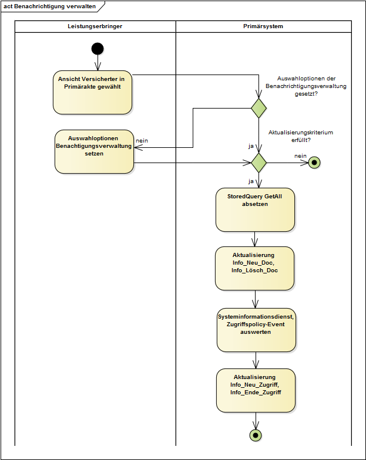
Abbildung 11: Abb_ILF_ePA_Benachrichtigungen_GetAll_mit_Zugriffspolicy-Event
A_14659
Das PS MUSS den RecordIdentifier an der lokalen Patientenakte (Primärdokumentation) persistent speichern, falls eine neu vergebene Berechtigung für den LE ermittelt wurde. <=
A_15100
Das PS SOLL dem LE Auswahloptionen für die Benachrichtigungsverwaltung anbieten. <=
Der StoredQuery GetDocuments liefert aktuelle Metadaten für Dokumente, auf die ein LE zugriffsberechtigt ist. Durch Nutzung von GetALL [ITI-18#3.18.4.1.2.3.7.4] werden die Metadaten aller XDSSubmissionSets und XDSDocumentEntries eines Versicherten in einer Akte erfragt.
Suchstrategien aus der Schnittstelle Registry Stored Query können Info_Neu_Zugriff und Info_Ende_Zugriff aktualisieren helfen, beispielsweise:
Die Suche erfolgt auf den Metadaten von Dokumenten, nicht auf den Dokumenteninhalten.
Das Primärsystem von Dr. Weber speichert die Übertragungsprotokolle zwischen dem Primärsystem und dem Konnektor, die darüber Auskunft geben, welche Aktenzugriffe er auf Frau Gundlachs ePA vollzogen hat.
Das PS benutzt "Übertragungsprotokolle", um insbesondere die vorgeschriebenen Nachweispflichten von Leistungserbringern bei der Übertragung von Dokumenten zwischen PS und Aktensystem zu erfüllen, bei denen Patientendaten betroffen sind. Das Erstellen, Speichern, Durchsuchbar machen und Anzeigen der Übertragungsprotokolle zwischen PS und Aktensystem ist eine Aufgabe des PS, nicht jedoch des Fachmoduls ePA oder anderer Komponenten der TI. Die Übertragungsprotokolle geben Auskunft über die Aktivität des PS bei der Nutzung der Akte, nicht aber über die Datenverarbeitung im Aktensystem des Versicherten.
A_16434
Das PS MUSS Übertragungsprotokolle der Kommunikation mit dem Fachmodul ePA des Konnektors speichern, durchsuchbar und einsehbar machen. <=
Das Format der Speicherung und die Schnittstellen zu den Übertragungsprotokollen können herstellerspezifisch sein. Das PS kann zur Speicherung zum Speichern Record Audit Event [ITI-20] verwenden, und darauf aufbauende Filtermechanismen zur Anzeige der Übertragungsprotokolle verwenden.
Durch das Loggen der SOAP-Parameter aus Tab_ILF_ePA_ClientInformationen bei Dokumentenmanagementzugriffen werden für das Einsehen von Übertragungsprotokollen erforderliche Zugriffsinformationen bereit gestellt.
Details zur Nutzung der Übertragungsprotokolle obliegen dem PS.
A_14691
Das PS MUSS im Falle einer partiellen Erfolgsmeldung (oder eines vorliegenden Warning-Elementes) eine Warnung bereitstellen, die es den Mitarbeitern der Leistungserbringerinstitution ermöglichen, die Ursache des (partiellen) Fehlers zu identifizieren und mögliche Gegenmaßnahmen zu ergreifen und die partiellen Fehler vom partiellen Erfolg unterscheiden helfen. <=
Tabelle 33: Tab_ILF_ePA_ErrorSeverity
| Wert |
Beschreibung |
Erläuterung |
Beispiel Anzeigetext |
|---|---|---|---|
| W |
Warning |
Transaktion erfolgreich, jedoch gibt es Abweichungen |
7402: Das Aktenkonto ist bereits eingerichtet |
| E |
Error |
Transaktion gescheitert |
7409: Das Aktenkonto wurde aktiviert, aber die Wiederherstellungsschlüssel konnten nicht am Aktensystem hinterlegt werden. |
[IHE-ITT-TF3] definiert, insbes. Table 4.2.4.2-3 und Table 4.2.4.2-4.
Bei IHE-Operationen stellt der in Im rs:RegistryResponse/@status Attribut den Verarbeitungsstatus der Anfrage dar:
Tabelle 34: Tab_ILF_ePA_IHE_Success_and_Error_Reporting
| Wert |
Beschreibung |
Erläuterung |
Beispiel Anzeigetext |
|---|---|---|---|
| urn:oasis:names:tc:ebxml-regrep:ResponseStatusType:Success |
[IHE-ITT-TF3]#Table 4.2.4.2-1, 4.2.4.2-3,4.2.4.2-4 |
Transaktion erfolgreich |
Transaktion erfolgreich |
| urn:ihe:iti:2007:ResponseStatusType:PartialSuccess |
[IHE-ITT-TF3]#Table 4.2.4.2-3, 4.2.4.2-4. |
In der Response einer Transaktion sind Error-Elemente enthalten, mindestens eines davon hat die Error Severity. Andere Teile der Transaktion sind erfolgreich verlaufen. |
Transaktion in Teilen erfolgreich |
| urn:oasis:names:tc:ebxml-regrep:ResponseStatusType:Failure |
[IHE-ITT-TF3#Table 4.2.4.2-1, 4.2.4.2-3,4.2.4.2-4] |
Transaktion gescheitert |
Der ePA-Anwendungsfall konnte nicht erfolgreich beendet werden. |
Auftretende Fehlertypen unterscheiden sich je nach Architekturebene:
Tabelle 35: Tab_ILF_ePA_DifferenzFehlerhandling
| Aspekt |
TelematikError |
IHE-Error |
|---|---|---|
| Fehlercodes |
als Nummer |
als String mit Kurzbeschreibung |
| Fehlerlisten |
Fehler als Einzelobjekte ohne Trace |
RegistryErrorList |
| Kritikalität Warning |
GERROR:Severity = "Warning" |
RegistryErrorList.highestSeverity="Warning" |
| Kritikalität Error |
GERROR:Severity = "Error", "Fatal" |
RegistryErrorList.highestSeverity="Error" |
| SOAP-Fehlertyp |
SOAP 1.1 |
SOAP 1.2 |
A_14179
Das PS MUSS im Falle von Fehlern Fehlermeldungen bereitstellen, die es den Mitarbeitern der Leistungserbringerinstitution ermöglichen, die Ursache des Fehlers zu identifizieren und mögliche Gegenmaßnahmen zu ergreifen. <=
Der Stacktrace der Fehler wird nicht an das PS weitergegeben.
Im Falle von Nicht-IHE-Fehlern erhält das PS vom Fachmodul ePA einen Fehler gemäß [gemSpec_OM#3.2.3], das ein einzelnes GERROR:Trace-Element enthält, das in der GERROR-Struktur im Element GERROR:Trace einen von der gematik spezifizierten Fehler enthält.
Es gibt keinen Fehlertrace bei SOAP-Fehlern. Die Fehlerbehandlung durch das PS MUSS auf Basis der Fehlerstruktur erfolgen. Herstellerspezifische ePA-SOAP-Fehler sind nicht zulässig. Anforderungen an das PS zum Fehlerhandling bei SOAP-Fehlern finden sich in [gemILF_PS#6].
Die vom FM geworfenen Fehler sind gelistet in Tab_ILF_ePA_Fehlermeldungen des Fachmoduls ePA.
Daneben kann es Fehler des Basiskonnektors geben gemäß [gemSpec_Kon], s. Übersicht in [gemILF_PS#6.6]
A_16205
Das PS SOLL bei Auftreten eines TelematikErrors den Code und den ErrorText zur Anzeige der Fehlermeldungen verwenden.
<=In der Response der IHE-Schnittstellen-Aufrufe können [ITI-TF-3#Table 4.2.4.1-2]: Error Codes auftreten, die drei ResponseStatusType aufweisen können.
Das Vorhandensein eine Error-List ist prinzipiell vereinbar mit einer teilweise erfolgreichen Verarbeitung. Falls die ErrorList nur Warnings enthält (RegistryError elements mit warning severity, aber ohne error severity), kann die Verarbeitung als erfolgreich angesehen werden.
Fehler aus Aufrufen des Dokumentenmanagements haben das in [ITI TF Vol 3#4.2.4] "Success and Error Reporting" beschriebene Format. Es wird im Fehlerfall ggf. eine Fehlerliste (RegistryErrorList) und darin Fehler (RegistryError) mit den Attributen errorCode, errorContext, codeContext und severity zurückgegeben.
Für die Analyse der Fehlerquelle enthält insbesondere auch der codeContext hilfreiche Informationen, die nützlich sind, um den Nutzer über die Ursache des Fehlers hinzuweisen und daraus Handlungen abzuleiten, mit denen die Ursache des Fehlers behoben wird.
A_14920
Das PS SOLL für Fehler aus der RegistryErrorList eine deutschsprachige Fehlermeldung erstellen.
<=
A_15092
Das PS KANN die IHE-Error-Fehlertexte mit eigenen Übersetzungen zur Anzeige bringen. Andernfalls KANN der Fehlertext für Fehler, bei denen keine Handlungsanweisung besteht, mit dem generischen Fehlertext "Der ePA-Anwendungsfall konnte nicht erfolgreich beendet werden." zur Anzeige gebracht werden. <=
A_15632-10
Bei Auftreten der in Tab_ILF_ePA_Handlungsanweisung_im_Fehlerfall aufgelisteten Fehlercodes SOLL das PS die geschilderten Handlungsweisen unterstützen.
<=
Tabelle 36: Tab_ILF_ePA_Handlungsanweisung_im_Fehlerfall
| Fehler-code | Fehlertext | Handlungsanweisung |
|---|---|---|
| 4010, 4011, 4012, 4014, 4015, 4016, 4017, 4021, 4204 | Es liegt eine fehlerhafte Konfiguration am Informationsmodell des Konnektors vor. Die Konfiguration muss korrigiert werden, z.B. durch einen Dienstleister vor Ort. | |
| 4063 | PIN gesperrt | Das PS soll den LE darüber informieren, dass der Versicherte die PIN mit seiner PUK am ePA-Frontend des Versicherten entsperren soll. Zusätzlich besteht für den Leistungserbringer die Möglichkeit, die PIN mit der PUK des Versicherten gemäß [gemILF_PS#4.1.5.3] bzw. [gemSpec_Kon#4.1.5.5.4] zu entsperren. |
| 7207 | PIN Verifikation gescheitert | Das PS soll den LE darüber informieren, dass der Versicherte seine PIN-Eingabe wiederholen soll. Wenn die PIN-Eingabe ein weiteres Mal scheitert, sollte darauf hingewiesen werde, dass nach dem dritten fehlerhaften Versuch die PIN gesperrt wird und nur über die PUK am ePA-Frontend des Versicherten freigeschaltet werden kann. Zusätzlich bietet das PS dem Versicherten die Möglichkeit an, die PIN seiner eGK mit der PUK gemäß [gemILF_PS#4.1.5.3] bzw. [gemSpec_Kon#4.1.5.5.4] am Kartenterminal zu entsperren. |
| 7231 | Die Abfrage getAuthorizationList wurde zu häufig gestellt | Das PS soll den Nutzer auffordern, die Anfrage nicht zu häufig zustellen oder den Administrator auffordern, das Anfrage-Intervall zu verlängern. |
| 7232 | Mindestens eine gewählte Dokumentenkategorie ist für die fachliche Rolle nicht zulässig. | Das PS soll den Versicherten bitten, den Zugriff auf die erforderlichen Kategorien zu autorisieren. |
| 7403 | Das Aktenkonto kann noch nicht verwendet werden. | Das PS soll das Aktenkonto des Versicherten aktivieren (s. Kap. 5.1.2). |
| 7209 | Keine Berechtigung für das Aktenkonto vorhanden | Wenn ein ePA-Zugriff ausgeführt werden soll, und der Versicherte ist einverstanden, eine Ad-hoc-Berechtigung auszuführen, soll die Ad-hoc-Berechtigung beim ihm eingeholt werden. |
| 7205 | Es konnte kein freigeschaltetes SM-B gefunden werden. | Das PS soll den Konnektoradministrator auffordern zu prüfen, ob eine SM-B im Konnektor konfiguriert ist, diese ggf. konfigurieren, freischalten (lassen) und Anwendungsfall wiederholen (lassen). |
| 7401 | Operation konnte nicht durchgeführt werden - Akte vorübergehend nicht verfügbar. | Das PS soll den LE darüber informieren, dass der Anwendungsfall zu einem späteren Zeitpunkt ausgeführt werden soll. |
| 7404 | Das Aktenkonto existiert nicht (mehr) in diesem ePA-Aktensystem. | Der Fehler kann in folgenden Konstellationen auftreten: 1) Der Versicherte hat die Akte gekündigt. Aktion: Zum Zeitpunkt der Fehlermeldung ist keine Aktion erforderlich. Es gibt keinen begründeten Anlass, einen weiteren Zugriffsversuch durchzuführen. 2) Ein Aktenumzug (der nur wenige Stunden in Anspruch nimmt) wurde vom Versicherten angestoßen. Zum Versicherten liegt im PS eine HCID für den Versicherten vor. Die HCID wurde zu einem früheren Zeitpunkt ermittelt, ist nun aber nicht mehr aktuell. Aktion: Ein erneutes getHomeCommunityID kann nach einem Zeitraum von wenigen Stunden ausgeführt werden. Dann wird die ePA des Versicherten unter der HCID des neuen Aktenkontos aufgefunden werden. Hinweis: Wechselt ein Versicherter seine Krankenkasse und dabei den Betreiber der ePA, so ist die Zustandsänderung des Aktenkontos im Prozess des Aktenumzugs (gemäß gemSpec_Aktensystem#Kap 6.1.1) für das PS nicht transparent. Das PS hat keine Steuerungsfunktion, nur ggf. die Möglichkeit, die HCID des neuen Aktenkontos zu erfragen. |
| 7405 | Das Aktenkonto wurde bei diesem ePA-Aktensystem gekündigt, kann aber aktuell noch benutzt werden. | Hinweis: Die Fehlermeldung ist abgekündigt. Es gilt die Handlungsanweisung zum Fehler 7404. |
| 7406 | Das Aktenkonto wurde bei diesem ePA-Aktensystem gekündigt. | Hinweis: Die Fehlermeldung ist abgekündigt. Es gilt die Handlungsanweisung zum Fehler 7404. |
Das Primärsystem können neben Fehlermeldungen des Basiskonnektors auch solche des Fachmoduls ePA erreichen. Hier eine Auswahl solcher Fehlermeldungen unter Hinweis auf Dokumente und Textstellen, in denen detaillierte Informationen zu finden sind.
Eine Liste von Fehermeldungen, das Primärsystem über das ePA-Fachmodul erreichen, findet sich im gemSpec_FM_ePA in den Tabellen
Darüber hinaus werden Fehlermeldungen, die spezifisch sind für Schnittstellenaufrufe am Fachmodul bei der Beschreibung der Schnittstellensignaturen von gemSpec_FM_ePA aufgelistet
Fehlermeldungen, die in der aktuelle Fachmodul-Spezifikation abgekündigt sind, ab in älteren Konnektoren noch auftreten können, sind in Tab_ILF_ePA_abgekündigte_Fehlermeldungen_des_Fachmoduls_ePA aufgelistet.
Tabelle 37: Tab_ILF_ePA_abgekündigte_Fehlermeldungen_des_Fachmoduls_ePA
| Code |
Fehlertext |
Referenz |
|---|---|---|
| Fehler 7206 |
Prüfung der Zugriffsberechtigung fehlgeschlagen |
|
| Warning 7405 |
Das Aktenkonto wurde bei diesem ePA-Aktensystem gekündigt, kann aber aktuell noch benutzt werden. |
Tab_ILF_ePA_Handlungsanweisung_im_Fehlerfall |
| Warning 7406 |
Das Aktenkonto wurde bei diesem ePA-Aktensystem gekündigt und ist nur noch für einen Kontowechsel lesend zugreifbar. |
Tab_ILF_ePA_Handlungsanweisung_im_Fehlerfall |
Das Aktensystem kann mindestens die Fehler der Tabelle Tab_ILF_ePA_IHE-Fehlermeldungen_Aktensystem werfen, die an das PS durchgereicht werden.
Tabelle 38: Tab_ILF_ePA_IHE-Fehlermeldungen_Aktensystem
| Code |
Hinweis |
Referenz |
|---|---|---|
| BadFolderAssociation | Für ein Dokument passen Metadaten nicht zum ausgewählten Dokumententyp | [gemSpec_Dokumentenverwaltung#A_20207*] Der CodeContext enthält die DocumentEntry.entryUUID des Dokument, das in den falschen Folder eingestellt wurde. |
| DocumentAccessNotAuthorized | Generelles schreibendes Zugriffsrecht wird verletzt | [gemSpec_Dokumentenverwaltung#A_20736*] Der CodeContext enthält im codeContext-Attribut des zurückgegebenen rs:RegistryError-Elements die UUID (DocumentEntry.entryUUID) des unpassendes Dokuments. |
| InvalidDocumentContent |
Dokument passt nicht zu Metadaten |
[IHE-ITI-TF3#4.2.4] |
| PolicyViolation | Zugriffsunterbindungsregeln wurden verletzt | [gemSpec_Dokumentenverwaltung#A_21695*] Der CodeContext enthält die UniqueID des Policy Documentes. |
| UnresolvedReferenceException |
entryUUID kann nicht aufgelöst werden |
[IHE-ITI-TF3#4.2.4] |
| XDSDocumentUniqueIdError |
uniqueId kann nicht aufgelöst werden |
[IHE-ITI-TF3#4.2.4] |
| XDSDuplicateUniqueIdInRegistry |
uniqueId ist nicht eindeutig |
[IHE-ITI-TF3#4.2.4] |
| XDSMissingDocument |
Dokument zu den Metadaten fehlt |
[IHE-ITI-TF3#4.2.4] |
| XDSMissingDocumentMetadata |
Metadaten zum Dokument fehlen |
[IHE-ITI-TF3#4.2.4] |
| XDSPatientIdDoesNotMatch |
PatientID fehlt |
[IHE-ITI-TF3#4.2.4] |
| XDSRegistryBusy |
Zu viele Aktivitäten in der Registry |
[IHE-ITI-TF3#4.2.4] |
| XDSRepositoryBusy |
Zu viele Aktivitäten |
[IHE-ITI-TF3#4.2.4] |
| XDSRegistryError |
interner Fehler |
[IHE-ITI-TF3#4.2.4] |
| XDSRepositoryError | interner Fehler | [IHE-ITI-TF3#4.2.4] |
| XDSRegistryMetadataError |
Fehlerhafte Metadaten |
[IHE-ITI-TF3#4.2.4] |
| XDSRepositoryMetadataError |
Fehlerhafte Metadaten |
[IHE-ITI-TF3#4.2.4] |
| XDSRegistryNotAvailable |
Fehler Zugriff Registry |
[IHE-ITI-TF3#4.2.4] |
| XDSRegistryOutOfResources |
Resourcenengpass |
[IHE-ITI-TF3#4.2.4] |
| XDSRepositoryOutOfResources |
Resourcenengpass |
[IHE-ITI-TF3#4.2.4] |
| XDSStoredQueryMissingParam |
Parameterfehler Stored Query |
[IHE-ITI-TF3#4.2.4] |
| XDSStoredQueryParamNumber |
Parameterfehler Stored Query |
[IHE-ITI-TF3#4.2.4] |
| XDSTooManyResults |
Tab_ILF_ePA_Fehlerbehandlung_Dokumente_Suchen |
|
| XDSUnknownStoredQuery |
Fehlerhafte Stored Query |
[IHE-ITI-TF3#4.2.] |
| XDSUnreferencedObjectException | Fehler beim Löschen von Dokumenten | [gemSpec_Dokumentenverwaltung#A_14670] und [IHE-ITI-TF3#4.2.4] |
| MaxDocSizeExceeded |
Die max. Dokumentengröße wurde überschritten. |
Bei Verletzung von A_16197, vgl. auch [gemSpec_Dokumentenverwaltung#Operation Cross-Gateway Document Provide#Technische Fehlermeldungen] |
| MaxPkgSizeExceeded |
Die max. Paketgröße wurde überschritten. |
Bei Verletzung von A_16519, vgl. auch [gemSpec_Dokumentenverwaltung#OperationCross-Gateway Retrieve#Technische Fehlermeldungen] |
Beim Einstellen von Dokumenten in die ePA werden die dazu genutzten SubmissionSets und die Dokumente selbst, durch Metadaten angereichert die für Such- und Filterfunktionen nachgenutzt werden können. Metadaten liegen sowohl am SubmissionSet, als auch am ePA-Dokument selbst vor.
Das PS MUSS Metadaten unter Beachtung von [gemSpec_DM_ePA] möglichst automatisiert aus den Primärdaten der Versicherten übernehmen und erzeugen, ohne dass eine händische Eingabe von Metadaten zwingend erforderlich ist. Die manuelle Auszeichnung der Werte von Metadaten sollte auf ein Minimum begrenzt werden.
Als Codierung wird UTF-8 verwendet.
A_14940
Das PS MUSS die Dokumententypen aus [gemSpec_DM_ePA#A_14760] betreffenden Festlegungen zur Verwendung von Metadaten gemäß [gemSpec_DM_ePA#3.3] beachten. <=
A_23556
Das PS MUSS beim Hochladen von Dokumente, für die kein ImplementationGuide vorliegt, die Metadaten gemäß Tab_ILF_ePA_Metadatenvorgaben belegen. Die Codes der eventCodeList sind im KDL Implementierungsleitfaden definiert.
Tab_ILF_ePA_Metadatenvorgaben
| Dokumententyp | classCode | typeCode | eventCodeList | OID Code System | Anzeigename |
|---|---|---|---|---|---|
| Arztbrief (nicht IG eArztbrief) | BRI | BERI | - | - | Arztbericht /Arztbrief |
| Krankenhausentlassungsbericht | BRI | BERI | AD010104 | 1.2.276.0.76.5.533 | Krankenhausentlassungsbericht |
| Befund/Vorbefund/Altbefund | BEF | BEFU | - | - | Ergebnisse Diagnostik |
| Röntgenbefund | BEF | BILD | DG020110 | 1.2.276.0.76.5.533 | Ergebnisse bildgebender Diagnostik (Radiologie) |
| Sonographiebefund | BEF | BILD | DG020111 | 1.2.276.0.76.5.533 | Ergebnisse bildgebender Diagnostik (Sonographie) |
| EKG-Auswertung | BEF | FUNK | DG060111 | 1.2.276.0.76.5.533 | Ergebnisse Funktionsdiagnostik (EKG) |
| Histologiebefund | BEF | PATH | PT080102 | 1.2.276.0.76.5.533 | Pathologiebefundberichte |
| Lungenfunktionstest | BEF | FUNK | DG060108 | 1.2.276.0.76.5.533 | Ergebnisse Funktionsdiagnostik (Lunge) |
| Bild | BIL | BILD | - | - | Ergebnisse bildgebender Diagnostik |
| Foto | BIL | FOTO | - | - | Fotodokumentation |
| OP-Bericht | DUR | OPDK | OP150103 | 1.2.276.0.76.5.533 | OP-Dokumente (OP-Bericht) |
| OP-Plan/OP-Vorbereitung | DUR | OPDK | - | - | OP-Dokumente (OP-Vorbereitung) |
| Dialyseprotokoll | DUR | FPRO | VL040202 | 1.2.276.0.76.5.533 | Therapiedokumentation (Dialyse) |
| Überweisung | VER | AUFN | AU050102 | 1.2.276.0.76.5.533 | Überweisung (Überweisunsgschein) |
| Krankenhauseinweisung | VER | AUFN | AU050101 | 1.2.276.0.76.5.533 | Verordnung von Krankenhausbehandlung |
| Anamnese | DUR | AUFN | - | - | Anamnese |
| Anamnesebogen | DUR | AUFN | AU010101 | 1.2.276.0.76.5.533 | Anamnesebogen |
| Therapievorschlag/Therapiebedarf | ANF | FPRO | - | - | Therapiedokumentation |
| Histologieanforderung | ANF | PATH | PT080101 | 1.2.276.0.76.5.533 | Histologieanforderung |
| Kontaktdaten Angehörige | ADM | PATD | - | - | Kontaktdaten Angehörige |
A_23609
Das PS SOLL die Suche nach Dokumenten, für die kein ImplementationGuide vorliegt, die Metadaten gemäß Tab_ILF_ePA_Metadatenvorgaben verwenden. Eine Suche nach classCode und typeCode ergibt ein unspezifischeres Suchergebnis als eine gezielte Suche nach eventCodes aus dem KDL Implementierungsleitfaden. <=
Wenn Leistungserbringer Dokumente einstellen, bei denen sie nicht selbst der Autor sind, kann es passieren, dass die TelematikID des ursprünglichen Dokumenten-Autors nicht in DocumentEntry.author.authorInstitution angegeben wurde. Ein Herunterladen und eine Weiterverarbeitung solcher Dokumente soll möglich sein, auch wenn eine strenge Validierung des Metadatums aufgrund der fehlenden TelematikID nicht erfolgreich sein sollte.
A_15086-08
Das PS MUSS dem LE die Möglichkeit zur Hinterlegung einer Default-Konfiguration von Metadaten geben. Die Selbstauskunft der LE-Institution MUSS zur Befüllung der Metadaten automatisiert herangezogen werden können.
<=Tab_ILF_ePA_Datenfelder_Selbstauskunft
| Vorkonfigurierbare Werte für DocumentEntry und SubmissionSet | Default-Konfiguration unter Beachtung von gemSpec_DM_ePA und [IHE-ITI-VS] |
|---|---|
| authorPerson | Person, die im Default-Fall als Autor von Dokumenten innerhalb der LEI fungiert, vgl. gemSpec_DM_ePA#2.1.4.3.1 |
| authorInstitution | Im Normalfall die Institution, welche die SMC-B beantragt hat. Vgl. gemSpec_DM_eP#2.1.4.3.1 |
| authorRole | Übliche Prozessrolle des Autors der LEI, in der das PS installiert ist. Vgl. gemSpec_DM_ePA#Anhang_C und [IHE-ITI-VS] |
| authorSpecialty | Fachrichtung des Default-Autors. Vgl. gemSpec_DM_ePA#Anhang_C und [IHE-ITI-VS] |
| authorTelecommunication | Telekommunikationsdaten der LEI, in der das PS installiert ist. |
| healthcareFacilityTypeCode | Art der Einrichtung, in der das PS installiert ist. |
| practiceSettingCode | Fachrichtung der Einrichtung, in der das PS installiert ist. |
| languageCode | Sprache, in welcher üblicherweise der menschenlesbare Teil des Dokuments abgefasst ist |
Die Telematik-ID der Leistungserbringerinstitution muss in vielen Nachrichten angegeben werden. Sie sollte aus der SMC-B ausgelesen werden und im PS persistent gespeichert werden.
Die Telematik-ID ist von den Kartenherausgebern der SM-B festgelegt und immer im Attribut "registrationNumber" im Admission-Element der Extension der SMC-B-Zertifikate (C.HCI.AUT, C.HCI.ENC,C.HCI.OSIG) eingetragen. Wenn nicht explizit vom Antragsteller eine neue Telematik-ID angefordert wird, wird bei Ausgabe von Folge- und Ersatzkarten die bisherige Telematik-ID wiederverwendet. Eine generelle Vorgehensweise kann die gematik hierfür nicht geben, da die Personalisierung der SMC-B sektoral unterschiedlich ist (siehe gemSpec_PKI, Anhang A). Zum Auslesen der Zertifikate kann die Operation ReadCardCertificate gemäß [gemSpec_Kon#4.1.9.5.2] verwendet werden. Die Telematik-ID ist in allen Zertifikaten in der Admissionstruktur als "registrationNumber" im ASN.1-Format gespeichert.
Erforderliche Wertebereiche (Value Sets) für ePA-Dokumente werden je nach Festlegung von [gemSpec_Voc_ePA] angegeben.
Bei der Migration von Akten werden Dateinamen überschrieben. Beim Einstellen und Auslesen von Dokumenten sollen daher bevorzugt die Attribute title und mimetype genutzt werden.
Einstellen von Dokumenten
Auf die Auszeichnung von in die ePA einzustellenden Dokumenten durch Metadaten kann das PS spezifische Einschränkungen und Vorbelegungen umsetzen:
A_15748-03
Für den Fall, dass LE der eigenen LE-Institution nicht die Autoren der einzustellenden Dokumente sind, KANN das PS in seinen Dialogen zur Beschreibung des Dokumenten-Autors und seiner Institution Auswahllisten von Wertebereiche der Metadaten author, authorSpecialty, healthcareFacilityTypeCode und practiceSettingCode in einer gemäß [gemSpec_DM#4.1] verkürzten Form zur Auswahl bringen. <=
A_16206-02
Beim Einstellen von Dokumenten SOLLEN sektorspezifische Empfehlungen zur Reduktion von Auswahllisten mögliche Werte für die Metadaten authorRole und typeCode beim Einstellen von Dokumenten gemäß [gemSpec_DM_ePA#5.2.3] beachtet werden. <=
Auslesen von Dokumenten
Insoweit Metadaten zur Anzeige gebracht werden, muss das PS die Anzeigenamen der Metadaten in eine lesbare Form bringen. Die Anzeige von Metadaten ist insbesondere zu dem Zwecke des Filterns großer Ergebnismengen erforderlich sowie zur Auswahl der gegebenenfalls herunterzuladenden Dokumente. Zum Filtern über Dokumentenmengen kann es nützlich sein, nicht nur Metadaten der DocumentEntries, sondern auch Metadaten der SubmissionSets anzuzeigen, um ein Ausblenden bestimmter Suchergebnisse zu ermöglichen.
A_14245-01
Das PS KANN über die Liste der in ePA definierten strukturierten Dokumente gemäß [gemSpec_DM_ePA#A_14761] hinaus zusätzliche Dokumentenformate gemäß [gemSpec_DM_ePA#A_14760] unterstützen, um sie zu verwalten. <=
Falls Word- oder Openoffice-Dokumente in die ePA eingestellt werden sollen, müssen diese Dokumente vor ihrem Upload in ein PDF umgewandelt werden.
Das DPE-XML der eGK ist ein Beispiel eines XML-Dokumentes, dessen Metadaten gemäß [gemSpec_Voc_ePA] angereichert werden.
Ein ContentProfile zu einem einzelnen Dokumentenformat bzw. Inhaltstypen eines Dokumentenformates beschreibt die Befüllung der Metadaten im Sinne einer Best Practice zur Vermeidung von Interoperabilitätsproblemen.
Der DocumentEntry. formatCode von Dokumenten, bei denen es kein Contentprofile gibt, kann mit dem Wert "urn:ihe:iti:xds:2017:mimeTypeSufficient" automatisch vorbelegt werden. Eine manuelle Auswahl des formatCodes soll vermieden werden. Dasselbe gilt für typeCode und classCode.
A_21651
Das Primärsystem MUSS strukturierte Dokumente der Kategorien aus Tab_DM_Dokumentenkategorien in gemSpec_DM_ePA#A_19388-* nicht nur anzeigen, sondern auch verarbeiten können, d.h. anlegen und bearbeiten können. Strukturierte Dokumente sind Dokumente, für die in gemSpec_DM Strukturdefinitionen aufgeführt werden oder aber Definitionen als Medizinische Informationsobjekte vorliegen. <=
A_14246
Das Primärsystem MUSS anhand der Metadaten eines durch Dokumente Suchen aufgefundenen Dokumentes erkennen, ob es in der Lage ist, diese zu verarbeiten, insbesondere anhand von mimeType, formatCode, classCode und typeCode des DocumentEntry. <=
Der Notfalldatensatz, der in die ePA eingestellt werden soll, wird vom PS entweder zuvor gemäß [gemILF_PS_NFDM#5.1.2] von der eGK gelesen oder er wird gemäß den im XML-Schema des Infomodells NFDM festgelegten Regeln und den darüber hinaus gehenden in [gemSpec_InfoNFDM] definierten Integritätsregeln erstellt, so dass der NFD gemäß [gemRL_QES_NFDM] signiert werden kann.
Ein Datensatz persönliche Erklärungen (DPE), der in die ePA eingestellt werden soll, wird vom PS entweder zuvor gemäß [gemILF_PS_NFDM#5.2.2] von der eGK gelesen oder er wird gemäß den im XML-Schema des Infomodells NFDM festgelegten Regeln und den darüber hinaus gehenden in [gemSpec_InfoNFDM] definierten Integritätsregeln erstellt.
Im <lcm:SubmitObjectsRequest> des <ProvideAndRegisterDocumentSetRequest> referenziert das <rim:ExtrinsicObject> die <rim:RegistryObjectList> die ID des angehängten NFD-Objektes bzw. DPE-Objektes.
A_18690
Das PS KANN die Werte der SubmissionSet-Metadaten für den Datensatz persönliche Erklärungen gemäß [gemSpec_DM_ePA] für das Dokumentenmanagement der ePA automatisiert befüllen und dabei die DPE-spezifischen Implementierungshinweise aus Tab_ILF_ePA_Nutzungsvorgaben für Metadaten NFD/DPE beachten. Datenquellen sind Daten des Einstellers und der DPE der eGK. <=
A_14504-06
Das PS MUSS die Werte der SubmissionSet-Metadaten für den Notfalldatensatz gemäß [gemSpec_DM_ePA] für das Dokumentenmanagement der ePA automatisiert befüllen und dabei die NFD-spezifischen Implementierungshinweise aus Tab_ILF_ePA_Nutzungsvorgaben für Metadaten NFD/DPE beachten. Datenquellen sind Daten des Einstellers und die NFD der eGK.
Tabelle 39: Tab_ILF_ePA_Nutzungsvorgaben für Metadaten NFD/DPE
Ausgewählte Metadaten |
Opt | Speziell auf NFD/DPE bezogene Nutzungsvorgabe (Wertvorgabe oder Implementierungsanweisung) |
|
|---|---|---|---|
| Metadatenelement DocumentEntry |
|||
| author | R | Erforderlich: autorPerson, authorinstitution optional | |
| authorPerson | O | Mögliche Quellen:
|
|
| classCode | R | Codesystem, ID=1.2.276.0.76.11.32
|
|
| creationTime | R | Mögliche Quellen (Mehrfachnutzung möglich):
|
|
| formatCode | R | Codesystem= 1.3.6.1.4.1.19376.3.276.1.5.6 Code=urn:gematik:ig:Notfalldatensatz:r3.1 |
|
| mimeType | R | application/xml | |
| sourcePatientId | R | NFD signed NFD_Document.Versicherter.Versicherten_ID, falls diese mit der Versicherten-ID der Primärdokumentation übereinstimmt, zur Übernahme gemäß [gemSpec_DM_ePA]#2.1.4.6 |
|
| title | O | Notfalldatensatz (Nur für NFD) Datensatz persönliche Erklärungen (Nur für DPE) |
|
| Metadatenelement SubmissionSet |
|||
| contentTypeCode | R | Klinische Aktivität, die zum Einstellen des SubmissionSet geführt hat gemäß [gemSpec_Voc_ePA]. Codesystem=1.3.6.1.4.1.19376.3.276.1.5.12 Code=8 |
|
Der Notfalldatensatz wird im Base64-Format, wie er aus der eGK ausgelesen wird, in das Element <xds:Document> eingefügt, das ein Attribut @id enthält, das dem rim:ExtrinsicObject/@id übereinstimmt.
A_15058
Das PS MUSS ePA-Daten im ContentProfile NFD/DPE in geeigneter Form zur Anzeige bringen können. Für die Anzeige der Inhaltsdaten SOLL die Anzeigefunktion der Notfalldaten bzw. des DPE nachgenutzt werden, die beim Auslesen der NFD/DPE von der eGK gemäß [gemILF_PS_NFDM] verwendet wird, sofern die Anzeigefunktion über die Anwendung NFDM verfügbar ist. <=
Der elektronische Medikationsplan, der in die ePA eingestellt werden soll, wird vom PS entweder zuvor gemäß [gemILF_PS_AMTS] von der eGK gelesen oder er wird gemäß den im XML-Schema des Infomodells eMP/AMTS festgelegten Regeln und den darüber hinaus gehenden in [gemSpec_Info_AMTS] definierten Integritätsregeln erstellt, so dass der eMP durch das PS gemäß [gemILF_PS_AMTS] zum Einstellen des eMP in die ePA vorbereitet ist. Die Einwilligung in die Nutzung des eMP wird nicht in der ePA gespeichert.
A_21103-03
Das PS MUSS dafür Sorge tragen, dass für den elektronischen Medikationsplan der eGK das XML-Artefakt der eMP/AMTS-Daten gemäß [gemSpec_Info_AMTS#2.1] in einer aktuellen Fassung in die ePA hochgeladen wird, falls die genannten Artefakte dort fehlen oder nicht in einer aktuellen Version vorliegen. Ein bereits in der ePA des Versicherten vorliegender eMP MUSS mittels der Replace-Option ersetzt werden. <=
A_21102-03
Das PS MUSS die Werte der Metadaten für den elektronischen Medikationsplan gemäß [gemSpec_DM_ePA] für das Dokumentenmanagement der ePA automatisiert befüllen und dabei die eMP-spezifischen Implementierungshinweise aus Tab_ILF_ePA_Nutzungsvorgaben für Metadaten eMP sowie die ValueSetDefinition aus [gemSpec_Voc_ePA] beachten. Datenquellen sind Daten des Einstellers oder eMP-Daten der eGK. <=
Tabelle 40: Tab_ILF_ePA_Nutzungsvorgaben für Metadaten eMP
Metadatum XDS.b |
Opt |
Nutzungsvorgabe (Wertvorgabe oder Implementierungsanweisung) |
|
|---|---|---|---|
| Metadatenelement DocumentEntry | |||
| classCode | R | Codesystem, ID: 1.2.276.0.76.11.32 Code: PLA |
|
| creationTime | R | element MP/A attribute MP/A/@t |
|
| healthcareFacilityTypeCode | R | Author des Dokumentes Der Wert MUSS aus [gemSpec_Voc_ePA], Value Set IHEXDShealthcareFacilityTypeCode gewählt werden. |
|
| practiceSettingCode | R | Author des Dokumentes Der Wert MUSS aus [gemSpec_Voc_ePA], Value Set practiceSettingCode gewählt werden. |
|
| sourcePatientId | R | Mögliche Quellen: KVNR des Versicherten = element MP/P attribute MP/P/@egk |
|
| Metadatenelement SubmissionSet | |||
| contentTypeCode | R | Klinische Aktivität, die zum Einstellen des SubmissionSet geführt hat. Codesystem=1.3.6.1.4.1.19376.3.276.1.5.12 Code=8 |
|
A_15059-03
Das PS MUSS ePA-Daten im ContentProfile elektronischer Medikationsplan in geeigneter Form zur Anzeige bringen können. Für die Anzeige der Inhaltsdaten SOLL die Anzeigefunktion des Medikationsplans nachgenutzt werden, die beim Auslesen des eMP von der eGK gemäß [gemILF_PS_AMTS] verwendet wird, sofern die Anzeigefunktion über die Anwendung eMP/AMTS verfügbar ist.
<=
Falls ein Arztbrief im Format als HL7 CDA R2-Dokument vorliegt, ohne dass der Arztbrief eine PDF-Darstellung hat, soll er direkt im Format mimeType = application/xml in der Dokumentenverwaltung der ePA verwaltet werden.
Ein Arztbrief, der als reines PDF-Dokument in die ePA eingestellt werden soll, soll direkt im Format mimeType = application/pdf in der Dokumentenverwaltung der ePA verwaltet werden.
Der Arztbrief nach § 291f SGB V hat gemäß [Richtlinie eArztbrief] die verpflichtenden Teile PDF-Dokument und CDA-XML (nur der CDA-Header ist verpflichtend). Um diesen Arztbrief in die ePA einzustellen und wieder auszulesen, wird auf das XML-Containerformat DischargeLetterContainer (s. Abb_ILF_ePA_eAB-XML-Containerformat) zurückgegriffen.
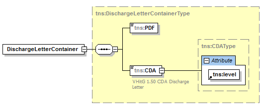
Abbildung 12: Abb_ILF_ePA_eAB-XML-Containerformat
A_14244-01
Falls der Arztbrief nach § 291f in zwei Anteilen vorliegt (einem CDA-Anteil und einem PDF-Anteil), MUSS das PS beide Teile gemeinsam in eine XML-Container-Struktur gemäß [gemSpec_DM_ePA#4.2] einstellen und diesen in eine gemeinsamen SubmissionSet in die ePA einstellen. In diesem SubmissionSet MÜSSEN Metadaten konform zu den Vorgaben des ImplementationGuides des eArztbriefes ig-eab* in [gemSpec_IG_ePA] gesetzt werden. <=
A_14556-02
Das PS MUSS die Werte der SubmissionSet-Metadaten für den elektronischen Arztbrief gemäß [gemSpec_DM_ePA] für das Dokumentenmanagement der ePA automatisiert befüllen und dabei die eAB-spezifischen Implementierungshinweise aus Tab_ILF_ePA_Nutzungsvorgaben für Metadaten eAB beachten.
Tabelle 41: Tab_ILF_ePA_Nutzungsvorgaben für Metadaten eAB
Ausgewählte Metadaten |
Opt | Speziell auf eAB bezogene Nutzungsvorgabe (Wertvorgabe oder Implementierungsanweisung) |
|
|---|---|---|---|
| Metadatenelement DocumentEntry | |||
| author | R | Erforderlich: autorPerson, authorinstitution optional | |
| authorPerson | O | Mögliche Quellen:
|
|
| authorInstitution | O | Mögliche Quellen:
|
|
| classCode | R | Codesystem, ID: 1.2.276.0.76.11.32 Code: BRI |
|
| creationTime | R | Mögliche Quellen:
|
|
| formatCode | R | Codesystem= 1.3.6.1.4.1.19376.3.276.1.5.6 Code=urn:gematik:ig:Arztbrief:r3.1 |
|
| mimeType | R | Für den eAB als XML: application/xml Für den eAB als PDF: application/pdf |
|
| sourcePatientId | R | eAB Patient.id, falls vorhanden und eine Versicherten-ID, mit Versicherten-ID des Versicherten abgleichen. Falls die IDs nicht matchen, muss eine Warnung ausgeben werden. | |
| title | O | eAB ClinicalDocument.title | |
| typeCode | R | Codesystem-ID=1.3.6.1.4.1.19376.3.276.1.5.9 Code=BERI |
|
| Metadatenelement SubmissionSet | |||
| contentTypeCode | R | Klinische Aktivität, die zum Einstellen des SubmissionSet geführt hat. Codesystem=1.3.6.1.4.1.19376.3.276.1.5.12 Code=2,3,4,8,9 gemäß [gemSpec_Voc_ePA] |
|
A_16246-02
Beim Auslesen eines eArztbriefes mit formatCode="Code=urn:gematik:ig:Arztbrief:r3.1" MUSS das PS die zwei Anteile (den CDA-Anteil und den PDF-Anteil) aus der XML-Container-Struktur DischargeLetterContainer gemäß [gemSpec_DM_ePA#4 Anhang B] aus der ePA herauslesen und als eArztbrief nach § 291f SGB V gemäß [Richtlinie eArztbrief] weiterverarbeiten und den PDF-Anteil zur Anzeige bringen können. <=
Daten digitaler Gesundheitsanwendungen (DiGA) liegen in interoperablen Formaten vor, die den Festlegungen in [gemSpec_DM_ePA] und falls vorhanden, Vorgaben aus [KBV Portal] folgen.
Nur digitale Gesundheitsanwendungen in der Rolle von Primärsystemen (DiGA-PS) können berechtigt werden, DiGA-Daten in für jeden Versicherten eindeutige Folder einzustellen. Andere Rechte auf Daten der Kategorie 9 bzw. DiGA können ihnen nicht eingeräumt werden.
Primärsysteme der Leistungserbringer können berechtigt werden, DiGA-Daten, d.h. Daten der Kategorie 9 bzw. "diga" zu lesen. Andere Rechte auf Daten der Kategorie 9 bzw. "diga" können ihnen nicht eingeräumt werden.
Das DiGA-PS hat zwei IHE-konforme Optionen zur Bereitstellung von Daten in die ePA: Einstellen neuer Dokumente oder Replacement bestehender Dokumente.
A_23131
Das DiGA-PS MUSS die DocumentEntry.entryUUID des von ihm in die ePA eingestellen Dokumentes persistieren, falls er die Möglichkeit nutzen möchte, für dieses Dokument Updates durchzuführen. Hierzu ist es gemäß [IHE-ITI-TF2b#3.42.4.1.3.7] erforderlich, dass ein DiGA-Client beim Einstellen des Dokumentes die DocumentEntry.entryUUID als valide UUID setzt und keine symbolische ID verwendet. Beim nachfolgenden Einstellen von Dokumenten mit der Option RPLC (replace) MUSS die persistierte DocumentEntry.entryUUID verwendet werden. <=
A_21503
Das Primärsystem MUSS DiGA-Daten, deren Formatvorgabe als Medizinisches Informationsobjekt gemäß [gemSpec_DM_ePA] definiert sind, bei vorliegender Berechtigung aus dem ePA-Aktensystem des Versicherten auslesen und anzeigen können. <=
Der Inhalt eines DiGA-Ordners wird durch Folder.title beschrieben. Dieses Feld wird vom Aktensystem belegt. Das PS kann unter den freigegebenen DiGA-Ordnern einen bestimmten Ordner über Folder.title suchen, aber auch über Folder.uniqueID. Einzelne DiGA-Dokumente, die durch ein Update fortgeschrieben werden, bleiben unter der einmal verwendeten DocumentEntry.entryUUID dauerhaft auffindbar.
In der ePA können strukturierte Dokumente verarbeitet werden. Strukturierte Dokumente und deren Zuordnung zu Sammlung und Sammlungstypen sind in [gemSpec_DM_ePA# ] beschrieben.
Zum Laden, Suchen und Einstellen von strukturierten Dokumenten gelten die Anwendungsfälle zum Laden, Suchen, Einstellen und Löschen von Dokumenten. Es kommen gemäß [gemSpec_DM] weitere Kriterien zur Aufbereitung einer Sammlung hinzu. Besteht der Bedarf nach mehreren Sammlungen des gleichen Typs (Beispiel Mutterpass) so wird jeweils ein dynamischer Ordner (je Schwangerschaft) angelegt. Beim erstmaligen Erstellen einer dynamischen Sammlung muss vom Primärsystem für diese Sammlung ein Ordner angelegt werden. Es wird empfohlen für den Titel des Ordners einen sprechenden Namen zu finden. Dadurch kann bei der Suche nach Sammlungen bereits durch den Titel auf deren Inhalt geschlossen werden. Da das Aktensystem dynamisch angelegte Ordner löscht, wenn diese keine Dokumente mehr enthalten, ist das Löschen der Ordner durch das Primärsystem nicht erforderlich.
Die Erteilung der Berechtigung für eine Sammlung kann im Primärsystem im Rahmen der Berechtigung für eine Dokumentenkategorie (soweit für Pass definiert) erfolgen.
Die Liste der strukturierten Dokumente wird sich im Laufe der Zeit erweitern. Die KBV liefert zu neu entwickelten MIOs Informationen über die interne Datenstruktur und fachliche Hintergründe, die gematik veröffentlicht Informationen darüber, um welchen Sammlungstyp es sich bei dem neuen strukturierten Dokument handelt, und welche Metadaten dieses strukturierte Dokument identifizieren.
Die Berechtigung zukünftiger strukturierter Dokumente wird über das Freigeben gemäß Vertraulichkeitsstufe geregelt, d.h. wenn ein neues, bisher noch nicht bekanntes strukturiertes Dokument vom Versicherten mit der Vertraulichkeitsstufe "normal" eingestellt wird, kann es über die genannte Vertraulichkeitsstufe für einen LE freigegeben werden.
A_19548
Das PS MUSS die Werte der DocumentEntry- und SubmissionSet-Metadaten für den elektronischen Impfpass gemäß [gemSpec_DM_ePA] für das Dokumentenmanagement der ePA automatisiert befüllen. <=
A_19549
Das PS MUSS die Werte der DocumentEntry- und SubmissionSet-Metadaten für den elektronischen Mutterpass gemäß [gemSpec_DM_ePA] für das Dokumentenmanagement der ePA automatisiert befüllen. <=
A_19550
Das PS MUSS die Werte der DocumentEntry- und SubmissionSet-Metadaten für das elektronische Untersuchungsheft für Kinder gemäß [gemSpec_DM_ePA] für das Dokumentenmanagement der ePA automatisiert befüllen. <=
A_19551
Das PS MUSS die Werte der DocumentEntry- und SubmissionSet-Metadaten für das elektronische Zahnbonusheft gemäß [gemSpec_DM_ePA] für das Dokumentenmanagement der ePA automatisiert befüllen. <=
A_19552
Das PS MUSS die Werte der DocumentEntry- und SubmissionSet-Metadaten für elektronische Verordnungen/den Verordnungsdatensatz gemäß [gemSpec_DM_ePA] für das Dokumentenmanagement der ePA automatisiert befüllen. <=
A_20197-01
Das PS MUSS die Werte der DocumentEntry- und SubmissionSet-Metadaten für elektronische Arbeitsunfähigkeitsbescheinigungen gemäß [gemSpec_DM_ePA] für das Dokumentenmanagement der ePA automatisiert befüllen. <=
Ob eine Signatur und welche Art der Signatur (QES oder nonQES) erforderlich ist, wird durch den Anwendungsfall für das jeweilige strukturierte Dokumentenformat festgelegt und außerhalb dieser Spezifikation veröffentlicht.
Im Folgenden wird das Vorgehen beschrieben, für den Fall, dass ein strukturiertes Dokumentenformat signiert wird.
Im Primärsystem liegt ein strukturiertes Dokumentenformat der ePA als FHIR-XML-Darstellung oder FHIR-JSON-Darstellung vor. Im Sinne der Signaturerstellung wird dies als Data to be Signed (DTBS) bezeichnet.
Vor dem Einstellen des Dokuments wird dieses elektronisch signiert (QES oder nonQES). Das Primärsystem nutzt dafür die Schnittstelle des Konnektors und dieser den HBA für QES bzw. SM-B für nonQES des einstellenden LE.
Bei der Signaturerstellung ist folgender Ablauf im Primärsystem erforderlich:
A_19742
Falls eine QES-Signatur für ein strukturiertes Dokument gefordert wird, MUSS das PS vor dem Einstellen eines strukturierten Dokumentes in die Akte des Versicherten eine QES-Signatur als CADES Enveloping Signatur für das strukturierte Dokument durch Aufruf der Operation SignDocument erstellen. <=
A_19957
Falls eine nonQES-Signatur für ein strukturiertes Dokument gefordert wird, MUSS das PS vor dem Einstellen eines strukturierten Dokumentes in die Akte des Versicherten eine nonQES Signatur als CADES Enveloping Signatur für das strukturierte Dokument durch Aufruf der Operation SignDocument erstellen. <=
Bei der Signaturprüfung ist folgender Ablauf im Primärsystem erforderlich:
A_19743
Falls eine QES-Signatur für ein strukturiertes Dokument gefordert wird MUSS das PS nach dem Laden eines strukturierten Dokumentes aus der Akte des Versicherten die QES des Dokumentes durch Aufruf der Operation VerifyDocument prüfen und das Prüfergebnis zur Anzeige bringen. <=
A_19958
Falls eine nonQES-Signatur für ein strukturiertes Dokument gefordert wird, MUSS das PS nach dem Laden eines strukturierten Dokumentes aus der Akte des Versicherten die nonQES des Dokumentes durch Aufruf der Operation VerifyDocument prüfen und das Prüfergebnis zur Anzeige bringen. <=
Ein vom Arzt mit QES-signiertes E-Rezept darf nicht in den Besitz des Versicherten gelangen und wird ausschließlich im E-Rezept-Server gespeichert. Deshalb wird begrifflich unterschieden zwischen E-Rezept und Elektronische Verordnungen/Verordnungsdatensatz. Elektronische Verordnungen/Verordnungsdatensatz ist nicht QES signiert und kann in die Akte des Versicherten eingestellt werden.
A_19974
Ein Primärsystem DARF NICHT Elektronische Verordnungen/Verordnungsdatensatz mit QES in die Akte des Versicherten einstellen. <=
Auf der Grundlage gesetzlicher Regelungen besteht eine Archivierungspflicht für die medizinischen Dokumente und für die Übertragungsprotokolle des Versicherten. Die Archivierung ist korrekt, verständlich, vollständig, nachvollziehbar und zeitnah durchzuführen. Je nach gesetzlicher Regelung sind damit dokumentierte Inhalte mit Aufbewahrungszeiträumen verbunden.
Zur Aufbewahrungsfrist wird auf die jeweils aktuelle Fassung der „Empfehlungen zur ärztlichen Schweigepflicht, Datenschutz und Datenverarbeitung in der Arztpraxis“ der BÄK und KBV, siehe [BÄK_KBV], und auf die einschlägigen gesetzlichen Normen
verwiesen.
Im Umfang der Archivierung sollen zusätzlich zu den aus der ePA heruntergeladenen und persistent im PS gespeicherten ePA-Dokumenten des Versicherten auch die zu diesen Dokumenten gehörigen Metadaten enthalten sein, die in [gemSpec_DM_ePA#Tabelle Nutzungsvorgaben für Metadatenattribute XDS.b] aufgelistet sind, soweit sie für den Verarbeitungskontext relevant sind.
| Kürzel |
Erläuterung |
|---|---|
| Versicherten-ID |
10-stelliger unveränderlicher Teil der 30-stelligen Krankenversicherungsnummer. |
| BAG |
Berufsausübungsgemeinschaft |
| DTBS | Data To Be Signed - zu signierende Daten |
| DTBSR | Data to be Signed Representation - maschinenlesbare Repräsentation der zu signierenden Daten |
| KT |
Kartenterminal |
| Begriff |
Erläuterung |
|---|---|
| Funktionsmerkmal |
Der Begriff beschreibt eine Funktion oder auch einzelne, eine logische Einheit bildende Teilfunktionen der TI im Rahmen der funktionalen Zerlegung des Systems. |
| ePA-Frontend des Versicherten | Softwareprogramm in der Verfügung des Versicherten, ausgestattet mit einer grafischen Benutzeroberfläche zum Starten fachlicher Anwendungsfälle der ePA und Darstellung des Ergebnisses der Anwendungsfälle. |
Das Glossar wird als eigenständiges Dokument, vgl. [gemGlossar] zur Verfügung gestellt.
Die nachfolgende Tabelle enthält die Bezeichnung der in dem vorliegenden Dokument referenzierten Dokumente der gematik zur Telematikinfrastruktur. Der mit der vorliegenden Version korrelierende Entwicklungsstand dieser Konzepte und Spezifikationen wird pro Release in einer Dokumentenlandkarte definiert, Version und Stand der referenzierten Dokumente sind daher in der nachfolgenden Tabelle nicht aufgeführt. Deren zu diesem Dokument passende jeweils gültige Versionsnummer sind in der aktuellsten, von der gematik veröffentlichten Dokumentenlandkarte enthalten, in der die vorliegende Version aufgeführt wird.
| [Quelle] |
Herausgeber: Titel |
|---|---|
| [gemGlossar] |
gematik: Glossar der Telematikinfrastruktur |
| [gemSpec_FM_ePA] |
gematik: Spezifikation Fachmodul ePA |
| [gemSpec_DM_ePA] |
gematik: Datenmodell ePA |
| [gemSpec_Kon] | gematik: Spezifikation Konnektor |
| [gemSpec_OM] |
gematik: Übergreifende Spezifikation Operations und Maintenance |
| [gemSysL_ePA] |
gematik: Systemspezifisches Konzept ePA |
| [gemILF_PS_NFDM] |
gematik: Implementierungsleitfaden Primärsysteme – Notfalldaten-Management (NFDM) |
| [gemSpec_InfoNFDM] |
gematik: Informationsmodell Notfalldaten-Management (NFDM) |
| [gemRL_QES_NFDM] |
gematik: Signaturrichtlinie QES Notfalldaten-Management (NFDM) |
| [gemSpec_Info_AMTS] |
gematik: Informationsmodell eMP/AMTS-Datenmanagement |
| [gemILF_PS_AMTS] |
gematik: Implementierungsleitfaden Primärsysteme – elektronischer Medikationsplan/AMTS- Datenmanagement (Stufe A) |
| [gemKPT_Arch_TIP] |
gematik: Konzept Architektur der TI-Plattform |
| [gemSpec_PKI] |
gematik: Spezifikation PKI |
| [gemSpec_Voc_ePA] | gematik: Vocabulary ePA (src/vocabulary), https://github.com/gematik/api-ePA |
| [gemSpec_IG_ePA] | gematik: Implementation Guides für strukturierte Dokumente (src/implementation_guides), https://github.com/gematik/api-ePA |
| [Quelle] |
Herausgeber (Erscheinungsdatum): Titel |
|---|---|
| [BasicProfile1.2] |
Basic Profile Version 1.2 http://www.ws-i.org/Profiles/BasicProfile-1.2-2010-11-09.html |
| [BasicProfile2.0] |
Basic Profile Version 2.0 http://ws-i.org/Profiles/BasicProfile-2.0-2010-11-09.html |
| [WSDL11] |
W3C (2006): WSDL 1.1 Binding Extension for SOAP 1.2, https://www.w3.org/Submission/wsdl11soap12/ |
| [SOAP12] |
W3C (2007): SOAP Version 1.2 Part 1: Messaging Framework (Second Edition), https://www.w3.org/TR/soap12-part1/ |
| [ebRS] |
ebXML Registry Services Specification Version 3.0 https://docs.oasis-open.org/regrep/regrep-rs/v3.0/regrep-rs-3.0-os.pdf |
| [IHE-ITI-TF2a], enthält [ITI-18] |
IHE International (2018): IHE IT Infrastructure (ITI) Technical Framework, Volume 2a (ITI TF-2a) - Transactions Part A, Revision 15.0, http://www.ihe.net/uploadedFiles/Documents/ITI/IHE_ITI_TF_Vol2a.pdf |
| [IHE-ITI-TF2b], enthält [ITI-41], [ITI-43], [ITI-45] |
IHE International (2017): IHE IT Infrastructure (ITI) Technical Framework, Volume 2b (ITI TF-2b) - Transactions Part B, Revision 14.0, http://www.ihe.net/uploadedFiles/Documents/ITI/IHE_ITI_TF_Vol2b.pdf |
| [IHE-ITI-TF2x] |
IHE International (2018): IHE IT Infrastructure (ITI) Technical Framework, Volume 2x (ITI TF-2x) – Volume 2 Appendices, Revision 15.1, http://www.ihe.net/uploadedFiles/Documents/ITI/IHE_ITI_TF_Vol2x.pdf |
| [IHE-ITI-TF3] |
IHE International (2018): IHE IT Infrastructure (ITI) Technical Framework, Volume 3 (ITI TF-3) - Cross-Transaction Specifications and Content Specifications, Revision 15.0, http://www.ihe.net/uploadedFiles/Documents/ITI/IHE_ITI_TF_Vol3.pdf |
| [IHE-ITI-RMD], enthält [ITI-86] |
IHE International (2018): IHE IT Infrastructure (ITI) Technical Framework Supplement, Remove Metadata and Documents (RMD), Revision 1.2 – Trial Implementation, http://www.ihe.net/uploadedFiles/Documents/ITI/IHE_ITI_Suppl_RMD.pdf |
| [IHE-ITI-XCDR] |
IHE International (2017): IHE IT Infrastructure (ITI) Technical Framework Supplement, Cross-Community Document Reliable Interchange (XCDR), Revision 1.4 – Trial Implementation, http://www.ihe.net/uploadedFiles/Documents/ITI/IHE_ITI_Suppl_XCDR.pdf |
| [IHE-ITI-TF1] |
IHE International (2018): IHE IT Infrastructure (ITI) Technical Framework, Volume 1 (ITI TF-1) Integration Profiles http://www.ihe.net/uploadedFiles/Documents/ITI/IHE_ITI_TF_Vol1.pdf |
| [ITI TF Supplement] |
IHE IT Infrastructure 5 Technical Framework Supplement Remove Metadata and Documents 10 (RMD) |
| [MTOM] |
W3C (2005): SOAP Message Transmission Optimization Mechanism, https://www.w3.org/TR/soap12-mtom/ |
| [Richtlinie eArztbrief] |
Kassenärztliche Bundesvereinigung (2017): Richtlinie über die Übermittlung elektronischer Briefe in der vertragsärztlichen Versorgung gemäß § 291f SGB V, Richtlinie Elektronischer Brief, Version: 10.0, https://www.kbv.de/media/sp/RL-eArztbrief.pdf |
| [KBV Portal] | Portal der Kassenärztliche Bundesvereinigung https://kbv.de |
| [XPATH] |
XML Path Language (XPath) Version 1.0 http://www.w3.org/TR/xpath |
| [OWASP Top 10] |
OWASP (2017): OWASP Top 10 -- 2017 - The Ten Most Critical Web Application Security Risks https://github.com/OWASP/Top10/raw/master/2017/OWASP%20Top%2010-2017%20(en).pdf |
| [KBV-UHeft] | KBV: Detaillierte Informationen zum eU-Heft https://www.kbv.de/html/e-u-heft.php |
| [IHE-ITI-VS] | IHE Deutschland (2021: Value Sets für Aktenprojekte im deutschen Gesundheitswesen, Implementierungsleitfaden, Version 3.0 http://www.ihe-d.de/projekte/xds-value-sets-fuer-deutschland/ |